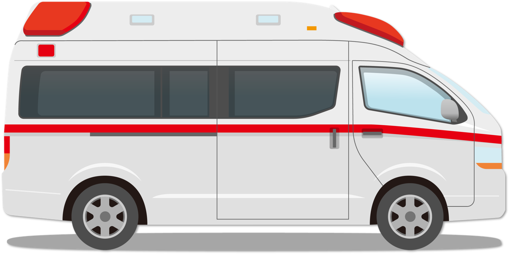

説明：教科書に準じて I. 学習目標 → II. 予習課題 → III. 講義内容(各回) → IV. アクティブ・ラーニング → V. 到達度評価 の順に構成しています。

01
神経系理学療法の概要Overview
1コマ
- 挨拶・講師の自己紹介
- 経歴や、これまでにやってきたこと、現在取り組んでいること
- 普段神経系の疾患を有する患者様とどのような関りがあるか
- 神経系理学療法の講義で何を目標にするか
- ★重要：疾患の概要を理解でき、かつ説明できる
- 各疾患の関係性や、違いなどを理解できる
- 疾患の特性を踏まえた理学療法評価をイメージ・列挙できる（実習で困らない）
- どのような理学療法を提供すれば良いのか基本的なものをイメージできる
- ★関わるうえでの注意点、リスク管理をできるようにする
- 疾患への理解を深めることで、解剖学や生理学などの基本知識を見直しする
- ★神経系に関連した国家試験の問題を回答できるようになる
- 神経系の疾患にはどのようなものがあるのか
- 発症率など、頻度の多い疾患・稀な疾患について理解する
- パーキンソン病
- 脊髄小脳変性症(多系統萎縮症／それ以外)
- 多発性硬化症／視神経脊髄炎
- 多発ニューロパチー(ギランバレー症候群など)
- 筋萎縮性側索硬化症
- その他(筋ジストロフィー／重症筋無力症など)
- どのような場面（急性期・回復期・生活期）で神経系の疾患と関わるのか
- 脳血管リハビリテーション料
- 一般病棟の対象疾患
- 回復期リハビリテーション病棟の対象疾患
- 介護保険サービス（特定疾病）
- 難病リハビリテーション料
- 神経系疾患に対する理学療法士の役割とは？
- 現在、学校で習っていて、使える武器（理学療法評価）は何でしょう？
- 運動機能障害（運動麻痺）に対する検査項目は何がありますか？
- 感覚障害に対する検査項目には何がありますか？
- 異常筋緊張に対する検査項目には何がありますか？
- 運動失調に対する検査項目には何がありますか？
- 姿勢・バランス障害に対する検査項目には何がありますか？
- ADL評価には何がありますか？
- 動作分析の項目は何がありますか？
- 高次脳機能障害に対する評価は何がありますか？
- 運動耐容能を評価するものは何がありますか？
- 本日の復習
0 / 3 達成(0%)
02
パーキンソン病Parkinson's Disease
3コマ
症例イメージ未アップロード
この講義を終えたときに，自分の言葉で説明できるようになっていたい項目です。
- 1 Parkinson病(PD)について以下の項目が説明できる
- (1) PDの原因
- (2) PDの診断基準
- (3) PDの重症度分類
- (4) PDの症状
- (5) PDの①薬物治療と②外科治療
- 2 PDに対する理学療法について以下の項目が説明できる
- (1) 理学療法の実施に際して収集すべき医学的情報
- (2) 医療面接，問診の方法
- (3) 姿勢の観察と評価方法
- (4) 動作の観察と評価方法
- (5) バランス能力の評価方法
- (6) ROMおよび筋力測定の方法
- (7) 筋緊張検査の評価方法
- (8) 深部腱反射の評価方法
- (9) 歩行の観察と評価方法
- (10) ADLの評価方法
- (11) 転倒のリスク管理
- (12) 理学療法のポイント
- (13) 環境設定と在宅生活
0 / 47 完了(0%)
解答例
脳幹の最も頭側に位置する。視床の下部で橋との間に位置する。
解答例
①錐体路、小脳系以外で運動機能を司る経路、大脳基底核を通る経路、網様体脊髄路、オリーブ脊髄路を含む
②症状として大脳基底核とそれに関連した神経症状を示す
②症状として大脳基底核とそれに関連した神経症状を示す
解答例
中脳にあるこれが変性するとドパミンの欠乏が起こり、線条体の働きを調整できなくなり淡蒼球内節の抑制ができなくなる
解答例
淡蒼球、被殻、尾状核から構成。大脳皮質からの入力を受け適切な行動の選択を司り、運動の指令を調節し、身体のスムーズな運動を可能にしている
解答例
身体の運動、意欲、学習などを引き起こす神経伝達物質
解答例
身体の構え、全身の形を表す
解答例
重心とは身体があらゆる方向に自由に回転しうる点、身体各部の重量が相互に平衡である点、基本矢状面・基本前額面および基本水平面の3面が交差する点であり、重心から床への垂直線が重心投影線である
解答例
重心投影線が支持基底面の中心に近いと安定
解答例
安定した立位では重心投影線と床反力作用点(COP)が支持基底面の中心付近で接近し、床反力ベクトルは重心を支えるように重心を向く
解答例
基本的な立位姿勢を維持するためには複数の筋群は持続的収縮を行っている。抗重力筋のうち頚部筋、脊柱起立筋、大腿二頭筋、ヒラメ筋を主要姿勢筋と呼ぶ
解答例
立脚相と遊脚相に分けられ各相は複数の期に分けられる(本書はRancho Los Amigos方式)
解答例
屈曲45°、伸展30°、回旋40°、側屈50°
解答例
股関節屈曲125°、伸展15°、外転45°、内転20°、外旋45°、内旋45°、膝関節屈曲130°、伸展0°、足関節屈曲(底屈)45°、伸展(背屈)20°
解答例
屈曲180°、伸展50°、外転180°、内転0°、外旋60°、内旋80°、水平屈曲135°、水平伸展30°
解答例
関節を受動的に動かしてそのときに受ける抵抗から筋緊張の程度を判定(痙縮、鉛管様強剛、歯車様強剛など)
解答例
運動開始までの時間や運動の遂行時間が遅延すること
解答例
①検査方法:安楽肢位にて試験する腱を伸張しハンマーで適度な刺激を加える
②判定基準:全く反応のないもの、減弱、正常、やや亢進、著明な亢進
②判定基準:全く反応のないもの、減弱、正常、やや亢進、著明な亢進
解答例
成人の重心は足底を基準としたとき、足底から身長の55〜56%の高さ、仙骨の前面にある
解答例
上下移動は両脚支持期で一番低くなり、ミッドスタンスで一番高い。上下動揺は2.3cm、左右動揺は4.6cmとなる
解答例
プレスイングでは股関節内転筋群、イニシャルスイングでは股関節、膝関節の屈筋群、前脛骨筋が働く
解答例
プレスイングで脊柱起立筋が働く
解答例
イニシャルコンタクトで股関節伸筋群、大腿直筋以外の大腿四頭筋、前脛骨筋、長指趾筋、長母趾伸筋が働く
解答例
ローディングレスポンスで両側の深層の体幹伸筋群と回旋筋群が働く
解答例
体幹は水平面にて約5°回旋する
解答例
屈曲制限、過度の屈曲、バーストレトラクト、内旋、外旋、内転、外転がある
解答例
屈曲制限、過度の屈曲、動揺、過伸展、急激な伸展、外反、内反、反対側の過度の屈曲がある
解答例
ローヒール、フォアフットコンタクト、フットフラットコンタクト、フットスラップ、過度の底屈、過度の背屈、過度の回外、過度の回内、ヒールオフ、ノーヒールオフ、トウドラッグ、反対側の伸び上がりがある
解答例
歩行時足を前に出すことができない症状で歩行開始時、方向転換時、目標の直前で、狭い所、突然の状況で起こる
解答例
前かがみで床をするように小刻みに歩くこと
解答例
歩行を始めると徐々に重心が前方へ変位し、加速していき止まれなくなる
解答例
PDの重症度を示したもの。I〜Vになるほど重症度が高くなる
解答例
PDの臨床評価スケールでpart1〜4まである
解答例
ドパミン前駆物質のL-dopaの補充療法が行われるが、治療薬の効果持続時間の短縮(wearing-off現象)や服薬時間と無関係に症状の急激な改善・悪化がみられる(on-off現象)
解答例
①目的:バランスの安定性が低下した高齢者のスクリーニングテスト
②方法:立位にて足を肩幅に開いて片方の肩を90°屈曲位として両足を動かさずにバランスを崩さず上肢を遠くまで伸ばす
②方法:立位にて足を肩幅に開いて片方の肩を90°屈曲位として両足を動かさずにバランスを崩さず上肢を遠くまで伸ばす
解答例
①目的:高齢者のバランス機能を測定するテスト
②方法:肘掛けのある背もたれ付きの椅子に座る→3m先の目印まで立ち上がる→歩き目印を回って椅子まで戻ってきて向きを変えて座る
②方法:肘掛けのある背もたれ付きの椅子に座る→3m先の目印まで立ち上がる→歩き目印を回って椅子まで戻ってきて向きを変えて座る
解答例
①目的:立位バランスの検査法
②方法:開眼で片足立ちを保てる時間を計測
②方法:開眼で片足立ちを保てる時間を計測
解答例
①目的:10mの歩行速度を検査
②方法:10mの最適速度、最大歩行速度、ステップ数を評価
②方法:10mの最適速度、最大歩行速度、ステップ数を評価
解答例
①目的:立ち直り反応、ステップ反応を評価
②方法:患者の後方から両肩を引くように後方へ外乱を加えて反応の状態をみる
②方法:患者の後方から両肩を引くように後方へ外乱を加えて反応の状態をみる
解答例
転倒、悪性症候群(急速な発熱、発汗、意識障害、筋強剛の増悪)、誤嚥、窒息、肺炎
解答例
姿勢反射障害、歩行時のすくみ足、小刻み歩行、加速歩行、前屈姿勢、環境
解答例
ヘルメット、肩パッド、ヒッププロテクター、ニープロテクターなど
解答例
自動可動域維持、改善練習(Parkinson体操)、理学療法士による他動的な短縮筋の伸張やROM維持
解答例
立位、座位の安定性確保のために体幹筋、股関節・膝関節の伸筋群の筋力増強を行うが、負荷のかかる運動については投薬の効果のある時間に行うことが効果的
解答例
キューとはすくみ足のように運動開始が困難な場合、視覚的、聴覚的な目標物(キュー:きっかけ)を準備することでスムーズに開始できるようになるもの
解答例
視覚刺激を使って床に線を引いて目標を設定。また、聴覚刺激を使うと手拍子や音楽のリズムを作って歩行練習を行う
解答例
段差が視覚的なキューとなり、平地歩行よりもスムーズに行えることが多く、手すりを使用して理学療法士の監視、介助のもとに行う
解答例
住居内の移動時に危険な段差の解消や手すりの設置、移動や方向転換時の広いスペースを確保
III
講義内容(全3コマ)
教科書 P.166〜186
- 前回のおさらい(神経系疾患にはどのようなものがあるか)
- 1 疾患の概要と障害の特徴・留意点
- 1) 概要
- 2) 原因
- 3) 診断基準
- ① CT・MRI
- ② SPECT
- ③ MIBG心筋シンチグラフィ
- ④ L-dopaテスト
- ⑤ 初期PDとして考えにくい症状
- 4) 重症度分類
- ① 症状の進行形式
- ② PDの進行
- ③ サブタイプ
- 5) Braakの仮説
- 6) 障害の特徴・留意点
- ① 基本的な病態
- ② 運動ループ(ハイパー直接路，直接路，間接路)
- ③ 症状
- 無動
- 振戦
- 筋強剛・固縮
- 姿勢反射障害
- 異常姿勢
- 歩行障害
- 転倒関連
- 非運動症状：認知機能／レム睡眠行動異常(RBD)／血圧調整／嗅覚障害／便秘／流涎／頻尿／うつ
- 7) 進行と予後
- 8) 治療
- ① 薬物療法
- ② 外科的治療
- 本日の復習
- 前回のおさらい
- 2 理学療法評価
- 1) 評価の意義・目的
- 2) 評価の実際
- ① 情報収集
- 医学的情報
- 社会的情報
- ② 問診
- ③ 全体像の把握
- MDS-UPDRS
- Parkinson Activity Scale
- Parkinson's Disease Questionnaire-39(PDQ-39)
- ④ 運動機能検査
- 10m歩行テスト
- 姿勢評価
- timed up and go test(TUG)
- freezing of gait questionnaire(FOG-Q)
- functional reach test(FRT)
- pull test
- balance evaluation systems(BESTest)
- ⑤ 筋緊張検査
- 筋強剛・固縮の評価
- ⑥ 不随意運動の評価
- 振戦
- ジスキネジア
- ⑦ ROM
- ⑧ 筋力検査
- ⑨ 自律神経機能障害の評価
- ⑩ 体重・栄養(血液検査)
- ⑪ ADL検査
- ① 情報収集
- 3 リスク管理
- 1) 転倒
- 2) 悪性症候群，PHS
- 3) 誤嚥，窒息，肺炎
- 本日の復習
- 前回のおさらい
- 4 理学療法方針
- 1) 予後予測
- 2) 目標設定，理学療法方針
- 3) 臨床推論(クリニカルリーズニング)と動作分析
- ① 概要
- ② 具体的な進め方
- 問診
- 動作の観察および誘導・介助
- 動作と姿勢の共通点
- 動作と症状との関連性をみる
- 画像や検査データなど病態情報の確認
- 5 理学療法の実践
- 1) 運動療法
- ① ROM制限への運動療法
- ② 基本動作，応用動作獲得へのアプローチ
- ③ バランス障害への運動療法
- 課題特性
- ④ 歩行練習
- ⑤ 筋力トレーニング
- ⑥ 全身持久力
- 2) 環境調整
- 3) 家族指導
- 1) 運動療法
- 6 おわりに
- パーキンソン病の講義全体の復習
IV
アクティブ・ラーニング
教科書 P.187〜188
0 / 22 達成(0%)
- PDの症例で時間帯によって動きの良い時間と，動きの悪い時間があると考えられる原因は何か？
- PDの症例で歩行時によくみられるすくみ足，方向転換は，なぜ不十分となっているのか，その原因は？
- PDの突進現象は転倒のリスクとなるが，どのような反応が不十分となっていることに原因があるのか？
- ある症例において椅座位から立ち上がり歩行を開始すると，顔面蒼白となりふらつき転倒しそうになった。このときに考えられるリスクは何か？
- 歩行開始時にすくみ足症状が著明にみられている症例に対して，前方に目標物を置き，またぐように指示するとスムーズに1歩を出すことができた。これはなぜか？
- 医療面接の際に表情乏しく，声も小さい症例に対して，どのように医療面接を進めればよいか？
- 寝返りから起き上がりが困難で家族の介護量が増えている症例の場合，どのようなROM確保が必要か？
- PDの病態や原因，進行状況を踏まえ，本疾患に対する理学療法の一般原則をまとめなさい。
- ① 評価(カルテ情報収集，医療面接を含む)
- ② 理学療法介入
- ③ リスク管理
- 本症例の理学療法目標は？
- 本症例の問題点は？
- 本症例の治療プランは？
- 本症例における理学療法実施におけるリスク管理の方法は？
- 本症例が退院する際の環境設備や生活指導について
- 本症例に対する理学療法における評価と治療を行ってみましょう。
0 / 18 達成(0%)
解答例
中脳の黒質が変性することでドパミンが減少し運動機能障害が出現する神経変性疾患。人口10万人当たり100〜150人が発症。神経変性疾患の中では最も頻度が高い
解答例
安静時振戦、無動、筋強剛、姿勢反射障害、歩行障害などの神経症状、L-dopa製剤の効果、補助的にMIBG心筋シンチグラフィのMIBGの取り込み低下にて診断
解答例
Hoehn-Yahr重症度分類
解答例
安静時振戦、無動、筋強剛、姿勢反射障害が4大症状といわれ、その他に異常姿勢、歩行障害、認知機能障害、睡眠障害、起立性低血圧、便秘、抑うつ、構音障害、嚥下障害が挙げられる
解答例
①ドパミン前駆物質(L-dopa)が代表的な治療薬だが長期服用でwearing-off現象、on-off現象、その他の現象が副作用としてみられる。また服薬の中断で悪性症候群を示すことがある。その他、ドパミンアゴニスト、COMT阻害薬、MAO-B阻害薬、抗コリン薬、ドパミン遊離促進薬、L-dopa賦活薬、ノルアドレナリン前駆物質、アデノシン受容体拮抗薬がある
②脳深部刺激療法(DBS)が代表的で、定位脳手術にて装置を頭蓋骨に固定し目標地点に刺激電極を刺入して症状緩和を図る
②脳深部刺激療法(DBS)が代表的で、定位脳手術にて装置を頭蓋骨に固定し目標地点に刺激電極を刺入して症状緩和を図る
解答例
過去に出現した副作用や、薬剤変更の理由となった症状など、加えて転倒の頻度、環境、目的動作、時間、体調なども収集
解答例
医療面接、問診の際は本人が服薬により話が十分にできる状態のときに行う。その際の姿勢や表情、発話の状態にも気を配り本人の体調を考慮して行う。本人・家族から転倒や動きづらい時間帯、どのような場面で転倒が起こっているか、家庭での歩行、移動の状態を聞く、また進行性疾患なので発症からの経緯も十分に聴取
解答例
自然立位にて異常姿勢の観察、重心の位置や支持基底面との関係についても観察・評価
解答例
起居動作、立ち上がり動作、歩行動作を観察し、PDの症状と照らし合わせ観察、評価
解答例
FRT、TUG、開眼片足立ちテストを行う
解答例
ROMは自動運動を確認し、他動運動にて角度を測定、筋力はMMTを用いて行う
解答例
リラックスした状態で関節を屈曲位から伸展方向にゆっくりと他動で動かし、抵抗感で鉛管様筋強剛か歯車様筋強剛かを評価
解答例
該当筋の腱の部分を打腱器で素早く叩くことで伸張反射として誘発。腱反射の減弱の有無、左右差の有無を評価
解答例
歩き始めの姿勢、歩行時の前傾・前屈姿勢や重心の位置、PD特有のすくみ足、小刻み歩行、加速歩行、上肢の振り、体幹の回旋を観察し評価
解答例
FIM、BIなどの評価表を用いるが、患者の日内変動を考慮
解答例
PDの転倒リスクは高く、動作の日内変動や環境設定、身体への予防措置(ヘルメット、ヒッププロテクター、ニープロテクターなど)を考慮
解答例
重症度、介入時期によって異なるがParkinson体操、ROM維持・改善運動、姿勢矯正・改善運動、筋力維持・増強運動、基本動作練習、バランス運動、歩行練習、ADL指導がポイント
解答例
環境設定にはキューを配置し、動きやすく転倒の危険性の排除を考えて設定。入院から在宅生活に移行する場合は設定されている環境の変化によって動きづらくなる可能性があるので、在宅での動きが安全に行えるように在宅での基本動作、歩行練習や訪問リハビリテーションの活用で動作の獲得が必要
POINT
- パーキンソン病の病理を理解することで、多彩な症状を「暗記」するのではなく理解してイメージできるようになる(特にパーキンソン病パンデミックといわれるほど今後増加することが予想されており、遭遇する頻度も高いためここをおさえておくことは非常に重要)
- 大脳基底核の機能を理解することで脳血管疾患に対する理解も深めることができる
- 鑑別のための脳画像の評価も他の疾患の理解につながる
- 理学療法介入が実際にできることまで目指す(特に起居動作の評価・治療(体位変換の介助方法も含めて)、起立動作、歩行介入の部分は実践できることを目指す)
03
脊髄小脳変性症(多系統萎縮症／それ以外)SCD (incl. MSA)
2コマ
症例イメージ未アップロード
この講義を終えたときに，自分の言葉で説明できるようになっていたい項目です。
- 1 脊髄小脳変性症(SCD)について以下の項目が説明できる
- (1) SCDの分類
- (2) 多系統萎縮症(MSA)の症状
- (3) 皮質性小脳萎縮症(CCA)の特徴
- (4) Machado-Joseph病(MJD)の特徴
- (5) SCDの医学的治療
- (6) SCDの①経過と②予後
- (7) SCDでみられる協調運動障害の分類
- 2 SCDに対する理学療法について以下の項目が説明できる
- (1) 理学療法の実施に際して収集すべき医学的情報
- (2) 医療面接の方法
- (3) 協調運動検査の方法
- (4) バランス評価の方法
- (5) 筋緊張検査の方法
- (6) 自律神経症状の評価方法
- (7) ①ROM ②筋力の特徴
- (8) 姿勢・基本動作の特徴
- (9) 歩行障害の特徴
- (10) 動作・歩行時のリスク管理
- (11) 嚥下機能障害のリスク管理
- (12) 理学療法方針
- (13) 運動療法の方法
- (14) ①生活指導と②ホームプログラム
0 / 41 完了(0%)
解答例
前庭小脳、脊髄小脳、大脳小脳の3つに区分
解答例
眼球運動および頭部の動きの協調性を制御
解答例
体性感覚、固有感覚の入力情報を利用し、四肢・体幹をフィードバック制御
解答例
運動の企画、実行を行うフィードバック制御
解答例
前庭器官からの入力
解答例
室頂核、前庭神経核に出力
解答例
脊髄、前庭器官、視覚などからの入力
解答例
前庭脊髄路、毛様体脊髄路に出力
解答例
大脳連合野からの入力
解答例
歯状核、視床を経て大脳運動前野に出力
解答例
運動遂行中の固有感覚などの感覚情報を利用し、運動を修正
解答例
運動はあらかじめプログラムされており、運動遂行中に変更は行われない。また、運動開始前に、その運動に必要な筋緊張調整が行われること
解答例
小脳、脊髄などをおかす神経変性疾患であり、運動失調を主体としてパーキンソニズムや自律神経症状などを呈する。また、その多くは進行性
解答例
MSA、CCA
解答例
MJD
解答例
病型により異なるが、運動失調症状、パーキンソニズム、錐体路徴候、自律神経症状などを呈する
解答例
運動失調、企図振戦、測定障害、変換（反復）運動障害または反復拮抗運動不能症、共同運動不能または共同運動障害、筋トーヌス低下、運動分解、時間測定障害
解答例
感覚入力の欠如により協調した運動の要素である、時間的要素・空間的要素・強度的要素が失われた状態
解答例
目標物に手や足を近づけようとする際、目標物に近づくにつれふるえる
解答例
目標物に手や足を近づけようとする際、目標とする地点に止めることができない症状。目標地点に達しない場合は測定過小、行き過ぎてしまう場合は測定過大
解答例
前腕の回内・回外運動のような主動作筋と拮抗筋を交互に働かせる運動がスムーズに行えないこと。リズムが不良になったり、交互に運動ができなくなったりする
解答例
目標物に手や足を近づけようとする際、直線的に最短距離で到達させることができず、迂回した運動となる
解答例
運動や動作を行う際、順序や各分節の調和が保たれず、行えないこと
解答例
対象者と対坐し、対象者自身の示指先端を自身の鼻に当てさせ、次にその指を検者の示指先端に当てさせる。その動作を交互に実施
解答例
座位にて、肘関節90°屈曲位とし、その状態で前腕の回内・回外を実施
解答例
対象者は背臥位、一方の踵を他方の膝につけ、つけた踵を脛に沿ってまっすぐ足背まで到達させる。その動作を繰り返し行わせる
解答例
①端座位、四つ這い位、膝立ち位、立位、片足立ち位などの条件下で静的・動的バランスおよび開眼・閉眼の違いを確認。動的バランスのテストバッテリーとして、functional reach test（FRT）やtimed up and go test（TUG）などを実施してもよい
②総合的な姿勢バランス検査としてBerg balance scale（BBS）などもよく使用
②総合的な姿勢バランス検査としてBerg balance scale（BBS）などもよく使用
解答例
起立・着座動作や座位・立位保持など14項目からなる。それぞれの項目について0〜4点の5段階で評価し、14項目の合計点を算出。カットオフ値は45点
解答例
対象者は肩幅程度に足を開いた立位で一側上肢を肘伸展位で90°屈曲位。足部の位置を変えずにできるだけ前方に重心を移動。最大到達位までの距離を計測
解答例
椅子の前方3mに目印を設置。椅子に座った姿勢を開始姿勢として3mの往復歩行を行い、着座するまでの所要時間を計測。速度は快適歩行速度、または最大歩行速度で計測
解答例
起居・起立・歩行などの動作について、動作のパターン、筋収縮のタイミングや出力、支持基底面と安定性などの観点から評価。歩行については、10m歩行テストなど定量的なテストも実施
解答例
10mの歩行路の前後に3m程度の予備路を設置して実施。10m歩行中の歩数と所要時間を計測。快適歩行速度と最大歩行速度を測定
解答例
痙縮の程度を示す尺度で、0〜4（1＋を含めて）の6段階で評価
解答例
運動失調の重症度の評価であり、座位・立位・歩行などの8項目について評価。最重度は40点
解答例
脊髄癆が原因で脊髄後索性運動失調を呈した患者に対する視覚代償を用いた運動方法
解答例
筋・関節などの固有受容器を刺激し、中枢神経機構を賦活する運動方法
解答例
四肢の末梢部や骨盤に重錘などの重量物を装着し、運動失調症状を制御する方法
解答例
弾性包帯を肩甲帯や骨盤帯などの中枢部に巻き、運動失調を制御する方法
解答例
支持基底面は広いものから徐々に狭く、重心位置は低いものから高いものへ、運動スピードは速い動きから徐々にゆっくりしたものへ、運動方向は単一方向から多方向へと段階的に進める
解答例
フレームが固定されている固定型、左右のフレームを交互に動かせる交互型、脚にキャスターがついているキャスター付き（前輪または四輪）
解答例
軽度の前傾姿勢で、肘関節を軽度屈曲させた状態で手が届く高さが一般的
III
講義内容(全2コマ)
教科書 P.196〜
- 前回のおさらい
- 1 疾患の概要と障害の特徴・留意点
- SCDの全体像
- 小脳への入力系と出力系
- ① 小脳の機能区分
- ② 前庭小脳への入力
- ③ 前庭小脳からの出力
- ④ 脊髄小脳への入力
- ⑤ 脊髄小脳からの出力
- ⑥ 大脳・小脳への入力
- ⑦ 大脳・小脳からの出力
- 各疾患の病態
- ① MJD/SCA3
- ② DRPLA
- ③ SCA6
- ④ SCA31
- ⑤ 多系統萎縮症(MSA)
- ⑥ 各疾患における変性部位の特徴
- 2 理学療法評価
- 1) 目的
- 2) 具体的な評価方法
- ① 前庭小脳障害による運動失調
- ② 脊髄小脳機能による運動失調
- めまいの有無／前庭・脊髄小脳による運動失調評価項目
- 衝動性眼球運動の評価
- 滑動性眼球運動の評価
- 立位バランスの評価(静的立位バランス：定性的評価／重心動揺計による定量評価，外乱刺激に対する反応，予測的姿勢制御)
- 歩行評価
- ③ 大脳・小脳機能による運動失調の評価項目
- 歩行ステップの評価
- 協調性評価の実際(上肢評価／下肢／構音障害)
- 認知機能
- ④ その他の評価
- 筋緊張低下
- 反射
- 感覚検査
- 筋力検査
- 3) 帰結評価指標(OM)
- 本日の復習
- 前回のおさらい
- 3 リスク管理
- 1) 自律神経症状への対応
- 2) 遺伝情報の取り扱い
- 3) 転倒予防
- 4) 進行時期に合わせたリハビリテーション
- 4 理学療法方針
- 1) 目標設定
- 2) 予後予測
- 3) 臨床推論(クリニカルリーズニング)
- 5 理学療法の実践
- 1) 理学療法の科学的根拠
- 2) 眼球運動障害に対する理学療法
- 3) 立位・座位バランストレーニング
- 4) 歩行
- 5) 応用動作
- 6) その他
- 7) 今後の課題
- 脊髄小脳変性症の講義全体の復習
IV
アクティブ・ラーニング
教科書 P.215〜
0 / 17 達成(0%)
- SCDの症例において，めまいの訴えが聞かれた。どのような評価が必要か？また，そう考えた理由は？
- ベッド上座位で上肢の運動失調が強くみられた症例が，背もたれ付き座位では失調症状が軽減した。何が考えられるか，また，そう考えた理由は？
- 断続性言語や嚥下障害を認める症例に対して，理学療法ではどのような対応が考えられるか？
- 四肢の運動失調がみられた症例で歩行障害がみられた。どのような歩行補助具を処方するのが適切か。また，そう考えた理由は？
- 四肢に比較して体幹障害が強い症例で歩行障害がみられた。どのような歩行補助具を処方するのが適切か。また，そう考えた理由は？
- ある症例は四肢末梢部に重錘を負荷することで立位および歩行時のバランス障害が改善されるが，汎化されない。在宅での屋内・屋外歩行時，どのような工夫をすればよいか。また，そう考えた理由は？
- ある症例において姿勢変換時に起立性低血圧がみられた。起き上がりや立ち上がりなどの基本動作練習の際，どのような工夫をすればよいか。また，そう考えた理由は？
- パーキンソニズムを呈する症例で，進行に伴い寝返りや起き上がりが困難になってきた。在宅で必要な対応は，また，そう考えた理由は？
- 病院内で歩行器歩行が自立レベルとなった症例。自宅は狭く，歩行器の実用性が乏しい。在宅環境はどのような工夫が必要か。また，そう考えた理由は？
- 重錘負荷で失調症状が軽減する理由は？
- SCDの1つであるMSA-Cにおいて，Horner症候群が併発しやすいのはなぜか？
- SCDの1つであるMSAにおいて，パーキンソニズムが出現しやすい理由は？
- SCDの病態を踏まえて，本疾患に対する理学療法の一般原則をまとめなさい。
- ① 評価
- ② 治療
- ③ リスク管理
- 本症例の理学療法目標は？
- 本症例の問題点(解決すべき課題)は？
- 本症例の治療プランは？
- 本症例における理学療法実施上のリスクとその管理方法は？
- 本症例が退院する際の環境整備や生活指導は？
- 最後に本症例に対する評価と治療を実際に行ってみましょう。
0 / 21 達成(0%)
解答例
孤発性SCDの代表的疾患はMSA、CCA、遺伝性SCDの代表的疾患はMJD
解答例
運動失調、錐体外路症状（パーキンソニズム）、自律神経症状（起立性低血圧、便秘など）など多彩な症状を示す
解答例
運動失調、構音障害などのほぼ純粋な小脳症状を呈する
解答例
運動失調、パーキンソニズム、眼球運動障害、筋萎縮、自律神経症状、末梢神経障害など多彩な症状を示すことが多い
解答例
根本的な治療方法はなく、出現している症状に対する薬物療法が中心
解答例
病態によって異なる。MSAなど多系統に障害を呈する疾患では、①進行が速く、②比較的重症。CCAのような純粋小脳型の疾患では①進行が遅く、②比較的予後が良い
解答例
運動失調、企図振戦、測定障害、変換（反復）運動障害または反復拮抗運動不能症、共同運動不能または共同運動障害、筋トーヌス低下、運動分解、時間測定障害
解答例
病態、治療方針（薬物療法）、現病歴、既往歴、合併症、リハビリテーション実施上のリスク
解答例
主訴、要望について聴取。進行性で根本的治療のない疾患のため、病態理解について確認。また、医療面接の際に、言語（構音）障害の有無についても確認
解答例
①四肢・体幹に分けて協調運動障害の有無をみる
②協調運動障害の種類に分けて症状を把握
②協調運動障害の種類に分けて症状を把握
解答例
①端座位、四つ這い位、膝立ち位、立位、片足立ち位などについて、静的・動的バランスおよび開眼・閉眼の違いを確認
②総合的な姿勢バランス検査として、BBSなどもよく使用
②総合的な姿勢バランス検査として、BBSなどもよく使用
解答例
筋緊張低下を呈することがあるため確認。視診・触診で筋の硬さを判別。筋を他動的に伸展させる被動性検査や、四肢の近位部を持って揺らす懸振性検査で筋緊張低下の有無を判別
解答例
起立性低血圧や排尿・排便障害の有無を確認。起立性低血圧は、座った姿勢と立った姿勢で血圧・脈拍を計測。血圧が30mmHg以上低下すると起立性低血圧と判断。起立性低血圧がみられた場合は、3〜5分程度立位を継続し、再度血圧・脈拍を測定して回復するかどうかをみる
解答例
①筋緊張低下がみられる場合は拡大、錐体外路症状を呈している場合は狭小がみられることがある
②病気の進行に伴い低下することがある
②病気の進行に伴い低下することがある
解答例
寝返り・起き上がり動作では、体節の協調的な動きが困難になるため、なかなか起き上がれないことがある。起立・着座動作では、下肢筋の同時収縮を必要とする中間姿勢の安定性を保つことが困難となるため、動作が性急になる
解答例
歩隔が広くなり、歩幅は狭くなる。さらに歩行速度は遅く、リズムは不規則となる、酩酊様歩行を呈することが多い
解答例
運動失調では運動のスピード、方向、強度の調整が困難になるため、突然ふらつきがみられることがある。転倒を予防するため、動作時の見守り、環境整備などを行う
解答例
嚥下障害があると、誤嚥性肺炎をきたし死亡のリスクがある。多部門から情報収集し、嚥下障害の有無、適切な食物形態などを確認
解答例
進行性の疾患であるため、定期的に評価し状態を把握。病期に合わせて対応を検討。初期には失調症状など機能障害の改善を図りながら活動性を維持し、二次的な障害を予防する。進行に合わせて補装具や自助具の使用など、代償的なアプローチを取り入れる
解答例
①バランス練習：重心位置の低い姿勢から高い姿勢、支持基底面の広いものから狭いものへと難易度を変えて行う。静的保持から動的保持へと自動・他動での重心移動を行う。開眼・閉眼でも行う
②筋力トレーニング：個別の筋力トレーニングとあわせて、基本動作練習などの全身性の運動を通して筋力増強を図る。運動を行う際には、極力ゆっくりした運動から始め、筋のコントロールを同時に行わせるとよい
③基本動作練習：寝返り・起き上がり動作では協調した体幹の屈曲や回旋が困難になることが多いため、頸部回旋→肩甲帯回旋→骨盤帯の回旋といった通常の運動パターンを再学習させる。立ち上がり動作は立位で股関節・膝関節を屈曲させる中間姿勢を保持する練習で、筋の同時収縮のコントロールを図る。静止保持から始め、徐々に起立や着座の動作中でも筋収縮をコントロールできるように進める
④歩行練習：必要に応じて、平行棒や歩行器などの歩行補助具を用いて練習を行う。骨盤帯を圧迫する、足関節に重錘を巻くなどして安定性を高める方法もある。安定性が上がってきたら、理学療法士が正面から対象者の肩や骨盤帯を押し、それに抗して歩行することでさらに安定性が高まることがある
②筋力トレーニング：個別の筋力トレーニングとあわせて、基本動作練習などの全身性の運動を通して筋力増強を図る。運動を行う際には、極力ゆっくりした運動から始め、筋のコントロールを同時に行わせるとよい
③基本動作練習：寝返り・起き上がり動作では協調した体幹の屈曲や回旋が困難になることが多いため、頸部回旋→肩甲帯回旋→骨盤帯の回旋といった通常の運動パターンを再学習させる。立ち上がり動作は立位で股関節・膝関節を屈曲させる中間姿勢を保持する練習で、筋の同時収縮のコントロールを図る。静止保持から始め、徐々に起立や着座の動作中でも筋収縮をコントロールできるように進める
④歩行練習：必要に応じて、平行棒や歩行器などの歩行補助具を用いて練習を行う。骨盤帯を圧迫する、足関節に重錘を巻くなどして安定性を高める方法もある。安定性が上がってきたら、理学療法士が正面から対象者の肩や骨盤帯を押し、それに抗して歩行することでさらに安定性が高まることがある
解答例
①日常生活指導：手すりの設置や段差の解消など必要な住宅改修を検討。歩行障害がある場合には特に動線の確認を行い、歩行補助具を使用できるスペースがあるか、または安定してつかまれる物があるかなどを確認
②バランス機能や筋力を維持するような全身運動
②バランス機能や筋力を維持するような全身運動
POINT
- 複雑な名称にまどわされず、まず分類を整理すること
- 「診断」するわけではないので、どのような症状が出るのかを理解し、それに対するリハビリの評価・方針を考えられることが重要
- MSA-Pについては、Parkinson病との違いを理解することで、Parkinson病の理解も深められる
- シャイドレーガー症候群については、自律神経症状(起立性低血圧)への対応も理解するきっかけとする
04
多発性硬化症／視神経脊髄炎MS / NMOSD
2コマ
症例イメージ未アップロード
この講義を終えたときに，自分の言葉で説明できるようになっていたい項目です。
- 1 多発性硬化症(MS)の特徴について以下の項目が説明できる
- (1) 時間的多発性(DIT)と空間的多発性(DIS)
- (2) 発症ピークの年代と性差
- (3) 経過と予後
- (4) 病期分類
- (5) 特徴的な機能障害
- 2 MSに対する理学療法評価について以下の項目が説明できる
- (1) 理学療法の実施に際して，カルテおよび問診で得るべき情報
- (2) 理学療法評価項目
- 3 理学療法評価結果から計画・立案する理学療法プログラムについて以下の項目が説明できる
- (1) リスク管理
- (2) 病期を勘案した理学療法の目標設定
- (3) 年齢と性差を勘案したリハビリテーションプログラムの目標設定
- (4) 運動療法の内容と方法
- (5) 住環境整備
- (6) 生活指導とホームプログラム
0 / 49 完了(0%)
解答例
本来、異物を認識し排除するための役割を持つ免疫系が、自分自身の正常な細胞や組織に対してまで過剰に反応し攻撃を加えてしまうことで症状を起こす、免疫システムの破綻による疾患のこと
解答例
代表的な全身性自己免疫疾患として全身性エリテマトーデス、関節リウマチ、Sjögren症候群などの膠原病。臓器特異的自己免疫疾患として橋本病、悪性貧血、１型糖尿病など
解答例
中枢神経系は脳と脊髄から構成。脳はさらに大脳、小脳、脳幹などに分類
解答例
末梢神経は脳脊髄神経系と自律神経に分けられ、脳脊髄神経系はさらに脳（大脳、脳幹）に起始核を持つ脳神経と、脊髄（前角）に起始核を持つ脊髄神経に分類
解答例
錐体路（皮質脊髄路）の障害により生じる臨床症状のこと ①筋萎縮を伴わない痙性麻痺（痙縮）
②腱反射亢進
③病的反射（Babinski反射など）の出現
④腹壁反射の消失
②腱反射亢進
③病的反射（Babinski反射など）の出現
④腹壁反射の消失
解答例
錐体路徴候の1つ。筋緊張の異常には亢進と低下があり、筋緊張が亢進した状態は痙縮と固縮に分けられる。痙縮は急激な受動運動に際して抵抗を示す。折りたたみナイフ現象を示す
解答例
末梢神経は神経線維と樹状突起の2種類の神経細胞の突起を持つ。神経線維はさらに神経細胞体の興奮を遠心性に伝える軸索と、電気的絶縁体として跳躍伝導を可能とする髄鞘（ミエリン）に分けられる
解答例
神経細胞には異常はないが、Schwann細胞に異常があり、髄鞘が形成されなかったり、局所的に髄鞘が崩壊したりした状態を脱髄という
解答例
圧迫や切断などの外傷や虚血を原因として軸索の連続性が局所的に断たれた状態。グリア細胞（神経膠細胞）は神経細胞体に栄養供給し、それら代謝産物は神経細胞体から軸索末端部へ軸索内輸送される。このため、神経細胞体との連絡が断たれた神経は、神経細胞体からの代謝障害により変性が生じる
解答例
細胞内における物質代謝障害により生じる組織細胞の性状の変化
解答例
発生学的に中枢神経系（脳および脊髄）は神経管から発生。この神経管の腔が後に脳室となる
解答例
大脳（後頭葉）と小脳の間にある脳硬膜の延長を小脳テントという。このテントの下方にある小脳および脳幹をテント下という
解答例
神経回路網やシナプスが環境に適応して機能や形態を変化させる現象
解答例
白血球は顆粒球、無顆粒球に大別され、顆粒球はさらに好中球、好酸球、好塩基球に分類され、無顆粒球には単球、リンパ球がある
解答例
体内に侵入した異物を排除して生体を防御する機能
解答例
リンパ球（B細胞）から産生された抗体を病原体（抗体）に結合させて病原体を排除する免疫システム
解答例
活性化されたリンパ球が直接細胞を攻撃する免疫システム
解答例
MSの特徴の1つとして温度感受性があり、入浴、運動などによって体温が上昇すると神経症状が悪化すること
解答例
疲れやすい状態や症状のこと
解答例
自発的に生じる異常な自覚的感覚のこと
解答例
その疾患または患者の経過および結末のこと
解答例
副腎から産生される副腎皮質ホルモンの1つ。抗炎症作用、免疫抑制作用などを有するため、ステロイド製剤はアレルギー性疾患、自己免疫疾患、血液疾患などに使用
解答例
運動そのものは行うことができるが、運動の協調性や正確性が障害された状態を運動失調という。運動失調は障害部位により、小脳性、脊髄（後索）性、迷路（前庭）性、大脳性に分類。小脳性失調とは小脳の病変により生じる運動失調で、同側半身の障害が生じる
解答例
脊髄後索の病変による深部感覚障害により生じる運動失調で、閉眼により失調症状が増悪（Romberg試験陽性）
解答例
運動失調で観察される歩隔が拡大した歩行
解答例
運動失調で観察される身体動揺の大きい歩行。よろめき歩行とも呼ばれる
解答例
錐体路障害で観察される歩行。麻痺側下肢が伸展しているため、外転して踏み出し、下肢の運動軌跡が円弧状になる（草刈り歩行、分回し歩行）
解答例
末梢神経（腓骨神経）麻痺により足関節背屈が障害されると下垂足となる。下垂足で歩行すると、これを代償するために下肢（膝）を高く上げる歩行となる。鶏歩とも呼ばれる
解答例
中殿筋麻痺により麻痺側立脚相で骨盤を水平に保持することが困難となり、骨盤が対側に下がる歩行
解答例
立位保持時や歩行の立脚相荷重応答期～立脚中期にかけて、膝関節軽度屈曲を保持することができず、膝関節を過伸展させて骨性に固定する現象。膝関節伸・屈筋群麻痺・筋力低下、下肢深部感覚障害、膝関節固定機能の破綻、足関節背屈制限などで生じる
解答例
運動遂行中の酸素摂取の最大値で、有酸素運動能力、全身持久力の指標。最大酸素摂取量に対する運動時の酸素摂取量の割合を%最大酸素摂取量（%VO2max）という
解答例
運動遂行中の心拍数の最大値
解答例
一般成人の最大心拍数は、220－年齢／分で推計
解答例
最大心拍数から安静時心拍数を除した値。運動時心拍数から安静時心拍数を除した値を上昇心拍数といい、予備心拍数に対する上昇心拍数の割合（%予備心拍数）が%最大酸素摂取量にほぼ相当する
解答例
安静時座位の代謝量を基準としたときの運動・作業時の代謝量の比
解答例
運動時の主観的な負担度を数字で表したもので、代表的なものにBorg指数がある。15段階のBorg指数はその値を10倍するとほぼ心拍数に該当
解答例
MMT、等速性筋力測定機器、徒手筋力計（ハンドヘルドダイナモメーター） 、握力計など
解答例
測定障害評価（鼻指鼻試験、指鼻試験、膝打ち試験、足指手指試験、踵膝試験、向こう脛叩打試験など）、反復拮抗運動障害評価（前腕回内回外試験、タッピングなど）、線引き試験、書字試験、Romberg試験、Mann試験など
解答例
開眼させて両足をそろえ、つま先を閉じて立たせ、身体が安定した立位保持が可能かを確認。その後、閉眼させると、身体の動揺が著明になり、転倒しそうになる。これをRomberg試験陽性という
解答例
つま先が対側の踵につくように両足を縦一直線に並べるように起立。安定して立位保持が可能ならば、閉眼。閉眼で身体の動揺が著明になり、転倒しそうになる場合をMann試験陽性という
解答例
自覚的運動強度（Borg指数）、FSSなど
解答例
循環、呼吸、消化、分泌、排泄、体温調節など、意識や意志の影響を受けることが比較的少なく、自動的に作用し続ける神経系
解答例
自律神経機能障害の結果生じる症状の総称。瞳孔症状（Horner症候群など）、発汗異常、循環系障害（Raynaud現象、起立性低血圧など）、消化器系障害、呼吸器系障害、膀胱直腸障害、自律神経失調など
解答例
自律神経障害の1つ。膀胱障害としては神経因性膀胱による排尿障害、直腸障害としては排便障害
解答例
思考制止、意欲低下を主徴とする状態
解答例
どちらも精神症状であるが、幻覚は感覚の障害、妄想は思考の障害
解答例
単純な運動機能障害がないにもかかわらず、目的に合った動作・行為ができない高次脳機能障害の1つ
解答例
視力・聴力・触覚などの感覚障害がないにもかかわらず、対象物を認識できない高次脳機能障害の1つ
解答例
まとまりのある形態を形成する能力に障害をきたし、空間的に配置する行為が困難になった状態。従来の構成失行
III
講義内容(全2コマ)
教科書 P.228〜
- 前回のおさらい
- 1 疾患の概要と障害の特徴・留意点
- 多発性硬化症とは
- 病態と疫学
- 症状
- ① Uhthoff徴候
- ② 易疲労性
- 経過と予後
- 治療法
- ① 急性増悪期の治療(初発を含む)
- ② 再発予防期(進行抑制)の治療
- ③ その他
- 2 理学療法評価
- 病態聴取
- セルフコントロール
- 活動性評価
- 歩行評価
- 視覚・眼球運動評価
- 感覚障害と疼痛評価
- 筋力評価
- 痙縮・筋緊張評価
- 運動失調評価
- 疲労評価
- 排尿・排便評価
- 精神症状
- 高次脳機能障害
- 理学療法評価以外で重要な評価
- ① EDSS
- ② 電気生理学的検査
- 本日の復習
- 前回のおさらい
- 3 リスク管理
- 治療中のリスク管理
- ① IVMP
- ② PE
- 理学療法中のリスク管理
- 臨床推論(クリニカルリーズニング)
- 治療中のリスク管理
- 4 理学療法方針
- 目標設定
- 予後予測
- 5 理学療法の実践
- 具体的な目標
- ① 理学療法の目的
- ② MSに重要な理学療法の効果
- ① 髄鞘の再生化
- ② 運動と免疫機能
- ③ 運動負荷量
- 有酸素運動
- 筋力強化運動
- ROM運動
- バランス運動
- 感覚入力
- 物理療法
- ① 寒冷療法
- ② 電気刺激療法
- 装具療法・移動補助具
- 自主トレーニング指導
- その他
- 具体的な目標
- 多発性硬化症／視神経脊髄炎の講義全体の復習
IV
アクティブ・ラーニング
教科書 P.252〜
0 / 22 達成(0%)
- MSが脱髄だけにとどまらず軸索変性を伴った神経変性に至ってしまうのはなぜか？
- MSがDITとDISを特徴とするということは，理学療法実施上，どのような問題点，難しさがあるのか？
- MSの運動失調は中枢性と脊髄後索性のいずれの要因が考えられるが，理学療法士としてその要因をどう鑑別するか，またその方法で鑑別できる理由は？
- MSの理学療法プログラムを立案する際，他の神経筋疾患と比べて，特に留意すべき点は何か，またそれはなぜか？
- 安静時心拍数70回／分の34歳の成人に対して，最大酸素摂取量の60%レベルの運動負荷量のトレーニングを実施するとき，目標心拍数はいくつになるか？
- MS患者に対する理学療法中に，突然の脱力感を訴えるとともに，顔と上肢にしびれを訴えた。理学療法士としてどうするか，またその理由は？
- あなたがもし，20歳代の女性でMSに罹患したとすれば，どういう悩みを持つと思うか，またその理由は？
- 40歳代のMS患者が病院を退院後に訪問リハビリテーションでの理学療法を継続しようと考えた場合，介護保険制度の訪問リハビリテーションサービスは使用できるか，それはなぜか？
- MSの症例において視力障害をきたす理由は？
- MSの症例，下肢のROM練習中に下肢の痙攣が生じた，どうするか？
- MSの排尿障害に対してどのようにアプローチを行いますか，またそれが有効だと考える理由は？
- MSの病態を踏まえて，本疾患に対する理学療法の一般原則をまとめなさい。
- ① 評価
- ② 理学療法
- ③ リスク管理
- 本症例に実施する理学療法評価は？
- 現時点での本症例の理学療法目標は？
- 現時点での本症例の問題点(解決すべき課題)は？
- 現時点での本症例に対する理学療法プログラムは？
- 本症例における理学療法実施上のリスクとその管理方法は？
- 本症例における住環境整備を検討するにあたって，収集すべき情報は？
- 本症例に対する理学療法終了のエンドポイントは？
- 本症例に対する評価と治療を実際に行ってみましょう。
0 / 13 達成(0%)
解答例
時間的多発性（DIT）とは再発・寛解を繰り返すことで、結果として予後が長期化。空間的多発性（DIS）とは脱髄が中枢神経系、末梢神経系に生じることで、結果として複数の症状を呈する
解答例
①20〜30歳代
②女性に多い（男性１：女性２.9）
②女性に多い（男性１：女性２.9）
解答例
①再発・寛解を繰り返す経過は、その内容でRRMS、PPMS、SPMSの3型に分類。さらにSPMS、PPMSは臨床症状の進行の有無により再分化
②時間的多発性により予後が長期化
②時間的多発性により予後が長期化
解答例
MSの病期分類は複数あり、必ずしも統一されていない。時間的多発性に注目すると、再発期、寛解期に分けられる。初発、再発にかかわらず症状の進行に注目すると、急性期・活動期・進行期と、慢性期・不活動期・非進行期に分けられる。寛解から再発の間には、少なくとも1ヵ月以上の不活動期、非進行期があり、再発予防期とも呼ばれる。また、寛解や再発を伴わず、発症から慢性進行性の経過をとるものもある
解答例
視神経症状（視力障害）、高次脳機能障害（失行、失認、注意障害、遂行機能障害、記憶障害、人格変化、構成障害など）、脳神経症状（複視、眼振、顔面の感覚障害、嚥下障害、構音障害）、運動失調、錐体路徴候、感覚障害、自律神経障害、易疲労性、精神症状（抑うつ症状）など
解答例
①経過の類型、使用薬剤を含めた治療法の把握が重要
②病歴の聴取が重要で、特に再発エピソードは、今後のセルフコントロールにつなげられる可能性がある
②病歴の聴取が重要で、特に再発エピソードは、今後のセルフコントロールにつなげられる可能性がある
解答例
①心身機能・身体構造レベル：運動麻痺（筋緊張：痙性、低緊張、筋力低下、変形） 、持久力・耐久性、感覚障害、運動失調、脳神経機能（顔面神経麻痺、言語障害など）、視力障害、精神障害、高次脳機能障害
②活動レベル：特に歩行能力については、異常歩行の原因として、運動失調、錐体路徴候、末梢神経障害による筋力低下などの複数の原因が考えられるため、臨床推論過程を踏まえた歩行観察が重要となる。また、歩行能力（距離）の目標設定については、EDSSが参考となる。バランス能力（運動失調）についても、小脳性、脊髄後索性、視覚障害など複数の原因が考えられるため、Romberg試験やMann試験など複数の協調性評価、バランス評価を組み合わせて低下の原因を検討する必要がある
③参加レベル：年齢・性を考慮したAPDL・IADLの状況と社会生活継続の可能性を中心に評価する
②活動レベル：特に歩行能力については、異常歩行の原因として、運動失調、錐体路徴候、末梢神経障害による筋力低下などの複数の原因が考えられるため、臨床推論過程を踏まえた歩行観察が重要となる。また、歩行能力（距離）の目標設定については、EDSSが参考となる。バランス能力（運動失調）についても、小脳性、脊髄後索性、視覚障害など複数の原因が考えられるため、Romberg試験やMann試験など複数の協調性評価、バランス評価を組み合わせて低下の原因を検討する必要がある
③参加レベル：年齢・性を考慮したAPDL・IADLの状況と社会生活継続の可能性を中心に評価する
解答例
①MSの特徴的な症状の1つにUhthoff徴候がある。このため、体温の上昇を誘発する可能性が高い温熱療法や過度な運動療法は注意が必要
②特に運動療法の負荷量については、易疲労性を勘案し、過労や過用を回避した症候限界性の負荷設定の検討が必須
③心理的・社会的サポート：発症ピークが社会的な位置づけや人生イベントが高まる20〜30歳代であることから、職業復帰のみのみならず、結婚・出産などに関するアドバイスが必要
④薬物療法（特にステロイド）による効果と副作用の確認
⑤時間的多発性による予後の長期化と二次的機能障害
②特に運動療法の負荷量については、易疲労性を勘案し、過労や過用を回避した症候限界性の負荷設定の検討が必須
③心理的・社会的サポート：発症ピークが社会的な位置づけや人生イベントが高まる20〜30歳代であることから、職業復帰のみのみならず、結婚・出産などに関するアドバイスが必要
④薬物療法（特にステロイド）による効果と副作用の確認
⑤時間的多発性による予後の長期化と二次的機能障害
解答例
神経の可塑性に対するアプローチに加え、症状の経過・予後を考慮した長期的見通しが必要。特に、若年発症、再発・寛解を繰り返しながら予後が長期化するため、長期にわたる身体機能維持や二次的機能障害の予防が重要。歩行能力については、EDSSを用いた病状の進行の程度の把握により、目標設定が可能
解答例
特に参加レベルの目標設定として、若年女性に発症が多いことから、職業復帰や買い物や家事などの生活スタイル、結婚や出産などの人生イベントを若年女性の目線に合わせて考慮する必要性がある
解答例
①有酸素運動：%最大酸素摂取量を指標とする報告もあることから、心拍数による負荷設定が必要
②筋力増強練習：MSにとって運動能力、バランス能力、ADL、疲労に対する要因となる筋力の向上は重要。症候限界性の負荷設定を含めて検討
③ROM練習
④バランス練習⑤歩行練習：EDSSを参考にした目標設定
⑥ADL練習：年齢・性別を勘案したADL項目の選択
⑦物理療法：Uhthoff徴候を勘案して、寒冷療法や電気刺激療法を選択
⑧装具療法：末梢神経障害に対する装具や、杖・車椅子といった移動補助具を検討
②筋力増強練習：MSにとって運動能力、バランス能力、ADL、疲労に対する要因となる筋力の向上は重要。症候限界性の負荷設定を含めて検討
③ROM練習
④バランス練習⑤歩行練習：EDSSを参考にした目標設定
⑥ADL練習：年齢・性別を勘案したADL項目の選択
⑦物理療法：Uhthoff徴候を勘案して、寒冷療法や電気刺激療法を選択
⑧装具療法：末梢神経障害に対する装具や、杖・車椅子といった移動補助具を検討
解答例
視覚障害、易疲労性を考慮した住環境整備を検討
解答例
理学療法プログラムの自主トレーニング指導については、長期化する予後を勘案して運動が習慣化できるように配慮。また、易疲労性や各種ストレスを勘案して、生活習慣全般をセルフコントロールできるようなアドバイスとフィードバックが必要。必要であれば介護が期待できるキーパーソンや家族へのアドバイスも検討
POINT
- 疾患名を理解すると分かることがある(「硬化」とは，神経の炎症がおさまった後，傷あとが硬くなること／症状は出たり(再発)，落ち着いておさまったり(寛解)を繰り返す(多発))
- 硬化(傷あとが硬くなる)と変性(細胞が減少して機能が失われる)の違いを理解する
- 多発性硬化症は「中枢神経」の脱髄疾患。多発ニューロパチーは「末梢神経」の疾患で，脱髄型と軸索変性型に分かれる
- 脱髄とはどのような状態なのかを理解することが重要
05
多発ニューロパチー(ギランバレー症候群など)Polyneuropathy (incl. Guillain-Barré Syndrome)
2コマ
症例イメージ未アップロード
この講義を終えたときに，自分の言葉で説明できるようになっていたい項目です。
- 1 多発ニューロパチーについて以下の項目が説明できる
- (1) ニューロパチーの概念
- (2) 障害部位の分布により分類される3つの病型
- (3) 病理学的な病変部位の違いにより分類される2つの障害型とその特徴
- (4) 機能障害の特徴
- 2 Guillain-Barré症候群について以下の項目が説明できる
- (1) 主徴および臨床症状
- (2) 経過
- (3) 疾患予後
- (4) 機能的予後
- 3 CIDP(慢性炎症性脱髄性多発神経炎)について以下の項目が説明できる
- (1) 主徴および臨床症状
- (2) 経過
- (3) 病型分類
- (4) 予後
- 4 Charcot-Marie-Tooth病について以下の項目が説明できる
- (1) 主徴および臨床症状
- (2) 経過
- (3) 予後
- 5 多発ニューロパチーに対する理学療法について以下の項目が説明できる
- (1) 理学療法の実施に際して収集すべき医学的情報と社会的情報
- (2) 問診で着目すべき情報
- (3) 理学療法評価の項目
- (4) 課題となる3つのリスク
- (5) 理学療法の方針
- (6) 理学療法の短期目標と長期目標
- (7) 運動療法の対象となる機能障害・能力低下
- (8) 装具療法の4つの目的
- (9) 日常生活活動への介入方法
- (10) 自主トレーニングの意義と指導
0 / 50 完了(0%)
解答例
中枢神経系と末梢神経系
解答例
体性神経系と自律神経系（あるいは運動神経系と感覚神経系）
解答例
感覚神経
解答例
運動神経
解答例
樹状突起，細胞体，軸索
解答例
活動電位を他のニューロンなどに伝える
解答例
髄鞘
解答例
有髄神経
解答例
無髄神経
解答例
Schwann細胞
解答例
Ranvier絞輪
解答例
電位依存性チャネル
解答例
有髄神経における伝導様式．活動電位が1つのRanvier絞輪から次の絞輪へと跳躍するように伝播するため脱分極の回数が減り，伝導速度が速い
解答例
髄鞘が何らかの原因で破壊されること
解答例
伝導速度の低下
解答例
末梢神経障害
解答例
運動麻痺，感覚障害，自律神経障害，腱反射減弱・消失
解答例
軸索障害型または手袋靴下型
解答例
脱髄障害型
解答例
さまざまな原因により末梢神経が障害されたときに出現する臨床症状を総称する疾患概念
解答例
遺伝性以外では全年齢層
解答例
末梢神経伝導検査
解答例
四肢末梢，特に足関節や足趾
解答例
急性の運動麻痺を主徴とする多発ニューロパチー
解答例
Hughesの機能グレード尺度
解答例
mEGOS
解答例
慢性炎症性脱髄性多発根ニューロパチー (chronic inflammatory demyelinating polyradiculoneuropathy) の略．2ヵ月以上をかけて緊徐に進行する四肢筋力低下，感覚障害を主徴とする原因不明の多発ニューロパチー
解答例
四肢遠位筋優位の筋力低下，感覚障害，逆シャンパンボトル様下腿筋萎縮，足部変形（凹足，槌状足指など）を主徴とする遺伝性多発ニューロパチー
解答例
アキレス腱反射
解答例
下腿の下1/3以下の筋萎縮
解答例
前脛骨筋の筋力低下による下垂足
解答例
鶏歩
解答例
膝関節周囲筋の筋力低下
解答例
Schellong試験，head up tilt table試験
解答例
NRS，VAS，FPS
解答例
FBS，FR
解答例
BI，FIM
解答例
最大速度でどれだけ速く効率よく歩けるかを歩行時間，歩数から評価
解答例
運動耐容能や疲労感の評価
解答例
過用性筋力低下
解答例
廃用性筋力低下
解答例
抵抗をかけずに他動運動や自動介助運動を行う
解答例
重錘や抵抗を加えた運動を実施
解答例
自動的ROM運動
解答例
他動的ROM運動
解答例
持久力向上
解答例
自転車エルゴメーター，散歩など
解答例
T字杖，4脚杖，Lofstrand杖，プラットホーム型杖など
解答例
キャスター型歩行器（握り型），前腕支持型歩行器，固定型歩行器（ピックアップ歩行器）など
解答例
自走用普通型車椅子，簡易電動車椅子，ティルト・リクライニング型車椅子など
III
講義内容(全2コマ)
教科書 P.263〜
- 前回のおさらい
- 1 疾患の概要と障害の特徴・留意点
- 多発ニューロパチーとは
- ① 多発ニューロパチーの各疾患の特徴
- Guillain-Barré症候群
- CIDP
- Charcot-Marie-Tooth病
- 障害の特徴と留意点
- ① 運動障害
- ② 感覚障害
- ③ 自律神経障害
- 2 理学療法評価
- 評価の意義・目的
- 評価の実際
- ① 情報収集(医学的情報，社会的情報)
- ② 問診
- ③ 重症度評価
- ④ ROM検査
- ⑤ 筋力検査
- ⑥ 感覚検査
- ⑦ 深部腱反射検査
- ⑧ 疼痛検査
- ⑨ 脳神経検査
- ⑩ 自律神経障害の評価
- ⑪ 呼吸機能評価
- ⑫ バランス検査
- ⑬ 歩行・移動能力検査
- ⑭ ADL評価
- 本日の復習
- 前回のおさらい
- 3 リスク管理
- 意義・目的
- リスクの実際
- ① 神経内科的治療・内服薬による副作用のリスク(感染症，血栓・塞栓症，肝機能障害)
- ② 合併症のリスク(自律神経障害，呼吸器疾患，嚥下機能障害，整形外科疾患)
- ③ 転倒・転落のリスク
- 4 理学療法方針
- 予後予測
- ① Guillain-Barré症候群
- ② CIDP
- ③ Charcot-Marie-Tooth病
- 目標設定
- 臨床推論(クリニカルリーズニング)
- 予後予測
- 5 理学療法の実践
- 運動療法
- ① 項目と留意点(筋力低下に対する運動療法，ROM制限に対する運動療法，感覚障害に対する運動療法，ADL練習，歩行練習，持久力向上のための運動療法)
- 装具療法
- ① 目的
- ② 適応
- ADLへのアプローチ
- ① ADL獲得へ向けた取り組み
- ② 代替手段の検討
- ③ 家族・介助者指導
- 自主トレーニングの指導
- ① 意義
- ② 実践
- 運動療法
- 6 おわりに
- 多発ニューロパチーの講義全体の復習
IV
アクティブ・ラーニング
教科書 P.277〜
0 / 23 達成(0%)
- 多発ニューロパチーにおける一次障害と二次障害にはどのようなものがあるか。また，なぜそのような障害が起こるのか？
- 担当した症例の末梢神経の障害程度を把握したいとき，確認すべき検査としてどのようなものが考えられるか。また，なぜそのように考えたか？
- 多発ニューロパチーでは筋疲労を生じやすく，持続的な運動や動作が困難になることが多い。その原因は何か。また，なぜそのように考えたか？
- 多発ニューロパチーでは早期からROM運動を実施する必要がある。それはなぜか？
- 多発ニューロパチーの筋力低下に対する運動療法を実施する際は運動負荷を慎重に検討する必要がある。それはなぜか？
- 多発ニューロパチーに適応のある下肢装具として，どのような種類が挙げられるか？
- 多発ニューロパチーでは日常的に転倒・転落の事例が多い。考えられる原因は何か？
- Guillain-Barré症候群の急性期では呼吸機能評価に注意する必要がある。それはなぜか？
- 典型的CIDPの筋力低下で注意すべきことは何か？
- Charcot-Marie-Tooth病では異常歩行として鶏歩がみられることが多い。その原因は何か？
- 独歩困難な患者では歩行・移動補助具を使用することが多い。処方の際，注意すべき点は何か？
- 家族・介助者指導を行う際，患者の身体機能の状況を把握してもらうが，その目的を2つ以上考えよう。
- 感覚障害(特にしびれ)が出現している場合，日常生活ではどのようなことに注意すべきか？
- ADLの練習が患者の心理に与える影響を考えよう。
- 自主トレーニングを指導する際，考慮すべき点は何か？
- 多発ニューロパチーの病態や予後予測を踏まえて，本疾患に対する理学療法の一般原則をまとめなさい。
- ① 方針
- ② 評価
- ③ 治療
- ④ リスク管理
- 本症例の生活背景を踏まえた理学療法の方針は？
- 本症例の理学療法目標は？
- 本症例の問題点(解決すべき課題)は？
- 多職種とどのように連携を図るとよいか？
- 本症例の治療プランは？
- 本症例における理学療法実施上のリスクとその管理方法は？
- 最後に本症例に対する評価と治療を実際に行ってみましょう。
0 / 25 達成(0%)
解答例
末梢神経の異常に起因する運動・感覚・自律神経障害の総称，いわゆる末梢神経障害
解答例
単ニューロパチー（単神経障害），多発ニューロパチー（多発神経障害），多発性単ニューロパチー（多発性単神経障害）
解答例
軸索障害型と脱髄障害型。軸索障害型は運動神経・感覚神経ともに左右対称末梢優位に障害されるため，手袋靴下型とも呼ばれる。脱髄障害型は髄鞘の障害によりSchwann細胞が脱落するため，跳躍伝導が障害
解答例
複数の末梢神経が左右対称性かつ四肢末端から障害され，運動麻痺・感覚障害・自律神経障害が出現
解答例
急性の運動麻痺を主徴とする多発ニューロパチー。左右対称性の弛緩性麻痺，腱反射消失，比較的軽い感覚障害が出現。重症な場合は呼吸筋麻痺を伴う場合がある
解答例
単相性の経過をとり，約6ヵ月～1年で自然に寛解することが多い。しかし，15〜20％は生活に支障をきたす後遺症が残存
解答例
良好なことが多い。約80％は症状が軽快，完治
解答例
必ずしも良好とはいえない。約20％が6ヵ月経過後も歩行障害を有し，発症1年後にも何らかの筋力低下が残存している例は，40％程度に及ぶ
解答例
2ヵ月以上をかけて緊徐に進行する四肢筋力低下，感覚障害を主徴とする多発ニューロパチー
解答例
症状が徐々に悪化する慢性進行性や，症状の増悪と寛解を繰り返す再発性など，進行経過もさまざま
解答例
障害分布や障害の性質の違いから典型的CIDPと非典型的CIDPに分類。大半は典型的CIDP
解答例
長期間の予後はさまざまであるが，再発寛解型のほうが慢性進行型よりも予後が良い
解答例
四肢遠位筋優位の筋力低下，感覚障害，逆シャンパンボトル様下腿筋萎縮，足部変形（凹足，槌状足指など）を主徴とする遺伝性多発ニューロパチー
解答例
進行はきわめて緊徐
解答例
原因遺伝子により異なるが，生命予後は悪くない
解答例
①現病歴，治療経過，血液データ，神経生理検査，画像検査所見，バイタルサイン
②生活背景，住環境，キーパーソン，使用している社会資源
②生活背景，住環境，キーパーソン，使用している社会資源
解答例
主訴，HOPE，痛み，疲労感
解答例
ROM検査，筋力検査，感覚検査，深部腱反射検査，疼痛検査，脳神経検査，自律神経障害の評価，呼吸機能評価，バランス検査，歩行・移動能力検査，ADL検査
解答例
①神経内科的治療の内服薬による副作用
②合併症
③転倒・転倒
②合併症
③転倒・転倒
解答例
予後予測や神経内科的治療，進行の経過を考慮し，①残存能力の維持
②廃用症候群の予防③代償手段の検討
④新たなADLの指導を行う
②廃用症候群の予防③代償手段の検討
④新たなADLの指導を行う
解答例
①短期的目標：新たに発症した症状に対し理学療法を実施し機能回復を図る
②長期的目標：患者本人だけでなく家族・介助者の意思も尊重し，治療や進行度合いを踏まえたうえで生活の再構築を図る
②長期的目標：患者本人だけでなく家族・介助者の意思も尊重し，治療や進行度合いを踏まえたうえで生活の再構築を図る
解答例
①筋力低下
②ROM制限
③感覚障害
④ADL低下
⑤歩行能力低下
⑥持久力低下
②ROM制限
③感覚障害
④ADL低下
⑤歩行能力低下
⑥持久力低下
解答例
①外傷に対する保護・安静
②良肢位の保持，変形・拘縮の予防
③機能の代償，運動訓練の介助
④神経修復後の過伸展防止
②良肢位の保持，変形・拘縮の予防
③機能の代償，運動訓練の介助
④神経修復後の過伸展防止
解答例
①新しいADL獲得へ向けた取り組み
②代替手段の検討
③家族および介助者指導
②代替手段の検討
③家族および介助者指導
解答例
①現在の身体機能の長期的な維持
②過負荷を防ぎ，症状の変化に対応した内容を適宜指導
②過負荷を防ぎ，症状の変化に対応した内容を適宜指導
POINT
- ニューロパチー(末梢神経障害)：「多発」がつくことで，複数の末梢神経が同時に障害されることを意味する
- 脱髄と，軸索の変性を理解することで症状の進行や回復過程が理解できる
- 運動負荷の設定が重要になる
06
筋萎縮性側索硬化症ALS
2コマ

症例イメージ未アップロード
この講義を終えたときに，自分の言葉で説明できるようになっていたい項目です。
- 1 筋萎縮性側索硬化症(ALS)について以下の項目が説明できる
- (1) ALSの病態
- (2) ALSの予後
- (3) ALSの障害の特徴
- (4) ALSの治療法
- (5) ALSに関わるうえでの留意点
- 2 ALSに対する理学療法について以下の項目が説明できる
- (1) 問診の内容
- (2) 包括的な重症度尺度
- (3) 神経学的所見の評価項目
- (4) ①特徴的な姿勢と②歩行および③具体的な評価の方法
- (5) ①筋力測定の方法と②留意点
- (6) ①呼吸機能評価と②嚥下評価の方法
- (7) ①認知機能評価と②意思疎通能力評価の方法
- (8) QOLの評価方法
- (9) 多専門職種との連携に用いられるツール
- (10) 5つの時期別に想定されるリスクとその対処方法
- (11) 理学療法の2つの方針と具体的な内容
- (12) 運動療法の方法
- (13) 想定しておくべき補助具
- (14) 呼吸理学療法の方法
0 / 54 完了(0%)
解答例
椎孔（上下につらなると脊柱管となる）
解答例
軸索が筋に達するニューロン，中枢部からの興奮を筋へ伝達する
解答例
前角
解答例
上位運動ニューロンとは，錐体路の主たる起始細胞である大脳皮質運動野の第5層の錐体細胞を指し，下位運動ニューロンは脊髄の前角や脳幹の運動性神経核の運動神経細胞のことをいう
解答例
上腕筋，上腕二頭筋，腕橈骨筋
解答例
①手関節の運動方向：屈曲（掌屈），伸展（背屈），橈屈，尺屈
②手指の運動方向：屈曲，伸展
②手指の運動方向：屈曲，伸展
解答例
①背屈：前脛骨筋，長趾伸筋，第三腓骨筋，長母趾伸筋
②底屈：腓腹筋，ヒラメ筋，足底筋，長趾屈筋，長母趾屈筋，膝窩筋，後脛骨筋
②底屈：腓腹筋，ヒラメ筋，足底筋，長趾屈筋，長母趾屈筋，膝窩筋，後脛骨筋
解答例
母趾外転筋，短母趾屈筋，母趾内転筋
解答例
小趾外転筋，短小趾屈筋，小趾対立筋
解答例
肺循環：右心室→肺動脈→肺胞→肺静脈→左心房
解答例
延髄（呼吸中枢），橋（呼吸調整中枢）
解答例
横隔膜，外肋間筋，内肋間筋前部
解答例
横隔膜，外肋間筋，内肋間筋前部，胸鎖乳突筋，斜角筋群，大胸筋，小胸筋など
解答例
内肋間筋中・後部，外腹斜筋，内腹斜筋，腹横筋，腹直筋など
解答例
①血中のCO2の濃度を指す
②頸動脈小体・大動脈小体
②頸動脈小体・大動脈小体
解答例
バケツの柄様運動：上部は前後に，下部は左右に主に動く
解答例
肺活量
解答例
①予測肺活量に対しての実測肺活量の比率のこと
②努力性肺活量に対する1秒量の比率のこと
②努力性肺活量に対する1秒量の比率のこと
解答例
認知期，準備期，口腔期，咽頭期，食道期
解答例
延髄網様体
解答例
口腔，咽頭，喉頭，梨状口，食道開口部，食道，噴門
解答例
咬筋，側頭筋，外側翼突筋，内側翼突筋
解答例
顎二腹筋，茎突舌骨筋，顎舌骨筋，オトガイ舌骨筋
解答例
胸骨舌骨筋，肩甲舌骨筋，胸骨甲状筋，甲状舌骨筋
解答例
動眼神経，滑車神経，三叉神経，外転神経，顔面神経，舌咽神経，迷走神経，副神経，舌下神経
解答例
主に顔面神経
解答例
①神経障害によって直接的に引き起こされる症状
②中枢症状によって性格や環境などに影響して引き起こされる精神機能や行動の症状
②中枢症状によって性格や環境などに影響して引き起こされる精神機能や行動の症状
解答例
MMSE，改訂長谷川式簡易知能評価スケール（HDS-R）
解答例
痙縮，腱反射亢進，病的反射陽性
解答例
筋萎縮，腱反射陽性，病的反射陽性
解答例
前脛骨筋などの足関節背屈や足趾伸展に関与する筋群
解答例
頸部伸筋群
解答例
①酸塩基平衡を酸性側にしようとする状態
②酸塩基平衡をアルカリ側にしようとする状態
②酸塩基平衡をアルカリ側にしようとする状態
解答例
①呼吸機能の低下などにより，血中二酸化炭素濃度が増えたことで血液が酸性に傾くことを指す
②過呼吸などにより，血中二酸化炭素濃度が低下し血液がアルカリ性に傾くことを指す
②過呼吸などにより，血中二酸化炭素濃度が低下し血液がアルカリ性に傾くことを指す
解答例
①閉塞性換気障害：％VCが80％以上であり，1秒率が70％以下
②拘束性換気障害：％VCが80％以下であり，1秒率が70％以上
②拘束性換気障害：％VCが80％以下であり，1秒率が70％以上
解答例
①閉塞性換気障害：COPDなど
②拘束性換気障害：間質性肺炎など
②拘束性換気障害：間質性肺炎など
解答例
嚥下中枢が損傷して生じたものが球麻痺であり，皮質脊髄路が損傷して生じたものが仮性球麻痺
解答例
上位運動ニューロンや下位運動ニューロンの神経細胞が脱落し，筋力の低下が進んだ結果全身が動かなくなり，ついには呼吸もできなくなる全身性疾患
解答例
呼吸器をつけなければ肺合併症にて死に至る，期間は3～5年だが個人差あり
解答例
運動障害（筋力低下），嚥下障害（球麻痺），呼吸障害（拘束性換気障害）
解答例
感覚障害，褥瘡，膀胱直腸障害，眼球運動障害
解答例
リルゾール，エダラボン
解答例
栄養状態と代謝の亢進の程度を把握するため
解答例
認知機能には問題ないが，運動器が全く動かずに表出が困難な状態
解答例
NPPVは非侵襲的に陽圧換気を行うものであるが，TPPVは気管切開チューブを留置して侵襲的に陽圧換気補助を行う
解答例
咳嗽，排痰補助装置，呼吸理学療法
解答例
ALS-FRS-R，厚生省重症度分類
解答例
ピンチ力を測定する機器，握力計
解答例
筋力トレーニングを含めた運動療法，装具療法（ストラップ，オルトップなど）
解答例
頸椎装具（ヘッドマスターカラーなど）
解答例
ポータブルスプリングバランサーなど
解答例
文字盤や意思伝達装置などを指す
解答例
Borg指数
解答例
医療保険法，年金保険法，介護保険法，身体障害者福祉法，障害者総合支援法，難病の患者に対する医療など
III
講義内容(全2コマ)
教科書 P.286〜
- 前回のおさらい
- 1 疾患の概要と障害の特徴・留意点
- 疾患の概要
- ① 病態
- ② 疫学
- ③ 予後
- 障害の特徴
- ① 筋力低下
- ② 球麻痺症状
- ③ 呼吸障害
- ④ 前頭側頭葉型認知症(FTLD)
- 治療法
- ① 薬物療法
- ② 栄養療法
- ③ 非侵襲的人工呼吸器(NPPV)
- ④ 侵襲的人工呼吸器(TPPV)
- ⑤ 誤嚥防止術
- 留意点
- ① 進行性疾患であるALSの捉え方
- ② ガイドライン
- 疾患の概要
- 2 理学療法評価
- 評価の意義・目的
- 評価の実際
- ① 問診
- ② 活動性評価
- ③ ALS-FRS-R
- ④ 厚生省重症度分類，機能的自立度評価法(FIM)，modified Norris scale(四肢症状尺度・球症状尺度)
- ⑤ 神経学的所見評価
- ⑥ 姿勢・歩行評価
- ⑦ 筋力評価(徒手筋力テスト／ハンドヘルドダイナモメーター検査)
- ⑧ 呼吸評価
- ⑨ 口腔内唾液分泌スケール(OSS)
- ⑩ 認知機能評価
- ⑪ 意思疎通評価
- ⑫ QOL評価
- ⑬ THANKS Evaluation(MND評価表)
- 本日の復習
- 前回のおさらい
- 3 リスク管理
- リスク対策
- ① 確定診断まで
- ② 告知前後
- ③ 呼吸不全期
- ④ NPPV期
- ⑤ TPPV期
- ⑥ 全身随意筋麻痺・完全閉じ込め症候群(TLS)
- リスク対策
- 4 理学療法方針
- 症状を見極める
- ① 安全な移動方法の提供と，活動範囲の拡大
- 目標設定
- 臨床思考(クリニカルリーズニング)
- ① 概要
- ② 具体的な進め方(問診／確認すべきこと)
- 症状を見極める
- 5 理学療法の実践
- 運動療法
- ① 運動負荷
- ② 運動療法
- ③ ROM練習，ストレッチ
- ④ 耐久性練習
- HAL医療用下肢タイプを用いた歩行練習
- 補装具と車椅子
- ① 補装具
- ② 車椅子
- 呼吸理学療法
- ① 胸郭可動域練習
- ② MIC練習
- ③ LIC練習
- ④ 舌咽呼吸(GPB)
- ⑤ 排痰機器
- 運動療法
- 6 おわりに
- 筋萎縮性側索硬化症の講義全体の復習
IV
アクティブ・ラーニング
教科書 P.305〜
0 / 20 達成(0%)
- ALSは全身の筋力低下が進行する疾患である。ADLがある程度自立している時期に，筋力評価はどの部位を優先して行うべきか。また，それはなぜか？
- ALSと確定診断された症例。身体の遠位部に筋力低下が認められている。この時期に体重変化の推移を把握する必要があるが，それはなぜか？
- ALSの症例において，歩行時にクリアランスが低下した。考えられることは何か。またそう考える根拠は？
- ALSの症例において，経過を追うごとに歩行時のふらつきが増大してきた。理学療法士として原因をどのように考えるか。またその対処方法は？
- ALSの症例において，認知機能の低下を疑わせるエピソードが認められた。理学療法士として，原因をどのように推測するか。またそれに対して家族へはどのように説明するか？
- ALSにおいて全身の筋力低下が進行するにつれて呼吸不全が生じ始める。それはなぜか？
- 訪問リハビリテーションの中で，ALSの患者が軽度の息苦しさを訴え始めた場合，理学療法士は多部門とどのように連携を図るべきか？
- NPPVを夜間装着しているALSの症例において胸郭に可動域制限が疑われた。この場合，理学療法はどのように行うとよいか，具体的な方法を2つ挙げてみよう。また，その方法が良いと考える根拠は？
- ALSの症例において，排痰装置はどのようなタイミングで導入を検討し始めることが望ましいか？
- TPPVを1ヵ月前に導入されたALSの症例。導入当初は文字盤と介助者の読唇術にてコミュニケーションが成り立っているものの，現在に至るまで全身の筋力低下はさらに進行している。今後コミュニケーションを維持していくうえで，想定しておくべきコミュニケーション方法は，そのうえで評価すべきことは何か？
- ALSの症例において，完全な閉じ込め状態となった状況で，理学療法士はどのような配慮が必要か，またそうなる前に準備できることは何か？患者だけでなく家族や多職種も含め考えなさい。
- ALSの症例(40歳代，男性，教員，妻と小学校に通う2人の子どもとの4人暮らし)において，担当している患者が先週末に告知された。今週から理学療法を行ううえで，本人にどのように配慮しながら進めるべきか具体的に状況を想像しながらデモンストレーションをしてみよう。
- ALSにおいて感覚障害が生じないのはなぜか？
- なぜALSにおいて遠位筋が優位に筋萎縮するのか？
- ALSの病態や医学的治療を踏まえて，本疾患に対する理学療法の一般原則をまとめなさい。
- ① ADLに支援が必要だが，人工呼吸器を全く必要としない時期
- 評価
- 治療
- リスク管理
- ② 人工呼吸器を導入した時期
- 評価
- 治療
- リスク管理
- ① ADLに支援が必要だが，人工呼吸器を全く必要としない時期
- 本症例の理学療法目標は？
- 本症例の問題点(解決すべき課題)は？
- 本症例の治療プランは？
- 本症例における理学療法実施上のリスクとその管理方法は？
- 本症例に対する環境整備や生活指導は？家族への介助指導方法は？
- 最後に本症例に対する評価と治療を実際に行ってみましょう。
0 / 19 達成(0%)
解答例
上位運動ニューロンと下位運動ニューロンが選択的にかつ進行性に変性・消失していく原因不明の疾患
解答例
肺合併症が直接的な死因。生存期間は個々の患者で相当の違いがあり，また画一的な予後とはならない
解答例
筋萎縮による筋力低下・球麻痺症状・拘束性換気障害が主だが，認知機能障害を伴うものも存在
解答例
薬物療法，栄養療法，人工呼吸器（NPPV，TPPV），必要に応じて誤嚥防止術
解答例
患者やその家族は予期悲嘆・心的ストレスが強いこと，さまざまな社会資源の活用や地域コミュニティー・多専門職種との継続した関わりにより生命予後やQOLは大きく変化すること，療育支援者との経過的関係性により患者や家族の意思決定は変化していくことに留意。また，さまざまな団体によって策定されたガイドラインを参考にすること
解答例
現病歴（発症時期，部位，進行の程度），病名告知の有無とその時期，治療方針内容，治療薬の服用など，生活状況（職種・業務内容，家族歴・家庭内の役割，住宅環境，趣味など），社会生活支援のサービスを受けているかどうか（介護保険など）
解答例
ALS-FRS-R，厚生省重症度分類
解答例
視診（線維束性攣縮の有無），触診（筋緊張の状態），深部腱反射，必要に応じて疼痛検査
解答例
①特徴的な姿勢：頸部下垂，肩関節亜脱臼
②観察されやすい異常歩行：胸椎後彎，腰椎前彎，下垂足歩行，反張膝歩行，上肢下垂歩行
③具体的な評価方法：転倒の有無の把握，床から立位までの所要時間（秒），6分間歩行テスト（m），10m歩行速度（分速）
②観察されやすい異常歩行：胸椎後彎，腰椎前彎，下垂足歩行，反張膝歩行，上肢下垂歩行
③具体的な評価方法：転倒の有無の把握，床から立位までの所要時間（秒），6分間歩行テスト（m），10m歩行速度（分速）
解答例
①MMTやハンドヘルドダイナモメーター検査にて測定
②関節拘縮や呼吸障害のために規定の肢位がとれなくなることや，再現性が得られにくい点に注意が必要
②関節拘縮や呼吸障害のために規定の肢位がとれなくなることや，再現性が得られにくい点に注意が必要
解答例
①％VC，％FVC，最大呼気圧，呼気ガス分析，夜間のSpO2などのモニタリングを実施。また，咳嗽評価のためのCPFとMICを測定。MICの測定が困難な場合はLICを測定する方法もある
②OSS
②OSS
解答例
①主にMMSE，FTLDを念頭にFABを使用
②TPPV装着後のコミュニケーション評価の指標として，意思伝達能力障害stage分類
②TPPV装着後のコミュニケーション評価の指標として，意思伝達能力障害stage分類
解答例
一般的には健康関連QOLがある。また，代表的なものには，ALSAQ-40，SF-36がある。近年では，SEIQOL-DWが注目されている
解答例
患者情報を簡潔かつ定量的に評価するためのツールとしてTHANKS Evaluationを用いることで，多専門職種と協働することが可能となりうる
解答例
①確定診断まで：さまざまな理由から病状初期の精神的不安定があることを配慮して関わっていく必要がある。患者のみならず，家族支援も含めた対応と配慮が必要
②告知前後：患者によって，否認や怒り，恐怖，不安，抑うつといった反応を示す場合があることや，まだ理解が不十分な場合もある。適切なタイミングで，情報の整理や病気に関する理解を支援することが大切
③呼吸不全期：換気改善のために気道クリアランスを良好にすることが推奨。また，オピオイドを使用する場合には安楽なポジショニングなどで身体的苦痛の軽減を図る
④NPPV期：呼吸不全は夜間から始まるため，夜間のSpO2の低下と高二酸化炭素血症，起床時の慢性肺胞低換気の自覚症状に注意を払う。またNPPVにおけるマスクデバイスの選択やマスクフィッティングを確認
⑤TPPV期：「寝かせきり」にせず，積極的かつ継続的に離床やQOL向上を図る。さらには，自律神経障害や，誤嚥性肺炎などの諸合併症にも注意が必要
②告知前後：患者によって，否認や怒り，恐怖，不安，抑うつといった反応を示す場合があることや，まだ理解が不十分な場合もある。適切なタイミングで，情報の整理や病気に関する理解を支援することが大切
③呼吸不全期：換気改善のために気道クリアランスを良好にすることが推奨。また，オピオイドを使用する場合には安楽なポジショニングなどで身体的苦痛の軽減を図る
④NPPV期：呼吸不全は夜間から始まるため，夜間のSpO2の低下と高二酸化炭素血症，起床時の慢性肺胞低換気の自覚症状に注意を払う。またNPPVにおけるマスクデバイスの選択やマスクフィッティングを確認
⑤TPPV期：「寝かせきり」にせず，積極的かつ継続的に離床やQOL向上を図る。さらには，自律神経障害や，誤嚥性肺炎などの諸合併症にも注意が必要
解答例
方針として，①症状を見極めることと②目標設定を行うことである。①に関しては，安全な移動方法を提供し活動範囲を拡大すること，気道クリアランスを保つ方法を確立すること，体重を管理すること，コミュニケーション手段を獲得することが挙げられる。
②に関しては，ALSは根治困難かつ進行性疾患であり機能・能力を維持することは困難であることから，病状の進行に伴う課題に対しどうすれば適応できるかを考えていくことが目標設定では重要
②に関しては，ALSは根治困難かつ進行性疾患であり機能・能力を維持することは困難であることから，病状の進行に伴う課題に対しどうすれば適応できるかを考えていくことが目標設定では重要
解答例
ALS患者のADL支援につながる起居動作や移動動作などがある。上位運動ニューロン障害が強い場合はストレッチを欠かさず行うが，実施後動作が困難になっていないか注意。また，有効な有酸素運動として自転車エルゴメーターを15分程度実施。運動負荷量は自覚的運動強度を聴きながら行うが中枢性疲労と末梢性疲労を分けて評価。過負荷によりCK値上昇や翌日までの疲労感の残存があれば負荷量を調整。歩行練習の方法の1つとして，医療用HALが挙げられる
解答例
①補装具：下垂足の初期においては，アンクルバンドやオルトップが効果的であり，下肢内反痙性が強い場合はプラスチック短下肢装具や支柱付き短下肢装具を作成することもある。頸部下垂に対してはヘッドマスターカラーなどの頸椎装具，肩周囲の近位筋の筋力低下にはポータブルスプリングバランサーなどがある
②車椅子：導入は標準型車椅子だが，病態に合わせて変更していく。必要に応じて頸部支持付き車椅子やリクライニングやティルト機能を有する車椅子，人工呼吸器などを搭載できる車椅子を選定
②車椅子：導入は標準型車椅子だが，病態に合わせて変更していく。必要に応じて頸部支持付き車椅子やリクライニングやティルト機能を有する車椅子，人工呼吸器などを搭載できる車椅子を選定
解答例
ALSの呼吸理学療法には，胸部可動域練習，MIC練習，LIC練習，舌咽頭呼吸，排痰補助装置の導入などが挙げられる。また離床も重要な方法の1つとなる
POINT
- 病態を理解したうえで，陰性徴候を理解する
- 嚥下機能や呼吸機能についての理解を深める
- 一般的なコミュニケーションツールを知り，さらに近年のICT発展による可能性，柔軟に取り入れる考え方を学ぶ
- 医療従事者としての心構え，患者様の心理面をそれぞれの立場から考える
07
その他(筋ジストロフィー／重症筋無力症など)Other Neuromuscular Diseases (incl. MG, MD)
1コマ
症例イメージ未アップロード
筋ジストロフィー(Duchenne型など)
この講義を終えたときに，自分の言葉で説明できるようになっていたい項目です。
- 1 筋ジストロフィーについて以下の項目が説明できる
- (1) 筋力低下が生じる疾患
- (2) 筋ジストロフィーの定義
- (3) 筋ジストロフィーの診断項目
- (4) 臨床病型別の特徴
- (5) 筋ジストロフィー医療の歴史と近年の課題
- 2 Duchenne型筋ジストロフィー(DMD)について以下の項目が説明できる
- (1) 疫学の特徴
- (2) 年齢と機能障害度分類に即した経過の理解
- (3) 特徴的な機能障害
- (4) DMDの理学療法評価の種類
- (5) DMDに対する運動療法
- (6) DMDに対する補装具療法
- (7) DMDに対する呼吸理学療法
- (8) QOLを支える理学療法士の支援
- 3 DMD以外の病型について以下の項目が説明できる
- (1) Becker型筋ジストロフィーの①疫学と②運動機能のピーク，③臨床所見
- (2) 福山型筋ジストロフィーの①疫学と②筋病理所見，③臨床所見
- (3) 筋強直性筋ジストロフィーの①疫学と②針筋電図所見，③病型
0 / 50 完了(0%)
解答例
筋のやせ，すなわち筋自体のボリュームが減少することを意味するが，筋力低下を伴うものを筋萎縮と表現することが多い
解答例
大脳皮質運動野（一次運動ニューロン）→放線冠→内包→大脳脚→錐体→側索→前角細胞（二次運動ニューロン）→末梢神経→神経筋接合部→筋
解答例
筋線維膜に生じる活動電位を測定することにより，運動単位の機能を評価
解答例
血清CK，アルドラーゼ，アスパラギン酸アミノ基転移酵素，アラニンアミノ基転移酵素，乳酸脱水素酵素，尿中クレアチン/クレアチニン比など
解答例
細胞の核の中には，複数の染色体があり，染色体は遺伝子情報物質であるデオキシリボ核酸（DNA）を含んでいる。このDNAの部分を遺伝子と呼ぶ
解答例
一般的に近位筋に強く，感覚障害や自律神経障害を伴わない。神経伝導速度検査は正常で，針筋電図では低電位短時間持続の筋原性変化がみられる
解答例
生後12ヵ月で歩き始め，生後18ヵ月で手を引けば階段を登れるようになり，2歳で上手に走るが発達にはばらつきがある
解答例
頸部伸筋群・屈筋群，腹筋群，脊柱起立筋群，大殿筋，腸腰筋，ハムストリング，大腿四頭筋，下腿三頭筋（特にヒラメ筋），前脛骨筋
解答例
ジストロフィン
解答例
換気機能障害は，肺活量と努力性肺活量を測定することで分類される ①%肺活量が80%以上であり1秒率が70%以上：正常
②%肺活量が80%以下であり1秒率が70%以上：拘束性換気障害
③%肺活量が80%以上であり1秒率が70%以下：閉塞性換気障害
④%肺活量が80%以下であり1秒率が70%以下：混合性換気障害
②%肺活量が80%以下であり1秒率が70%以上：拘束性換気障害
③%肺活量が80%以上であり1秒率が70%以下：閉塞性換気障害
④%肺活量が80%以下であり1秒率が70%以下：混合性換気障害
解答例
CPF
解答例
バッグバルブマスクや舌咽頭呼吸，従量式の人工呼吸器，機械的排痰補助装置などの道具を用いて陽圧換気をさせることにより，肺活量以上の空気を肺にため込む評価方法
解答例
①飲食物を口腔に取り込み，胃に送り込む一連の動作
②先行（認知）期，準備期，口腔期，咽頭期および食道期に分類
②先行（認知）期，準備期，口腔期，咽頭期および食道期に分類
解答例
スクリーニング検査，嚥下造影検査（VF），嚥下内視鏡検査（VE）
解答例
飲食物や唾液などが誤って気道内に入ることから発症する肺炎のこと。咽喉頭などに定着している微生物を下気道へ誤嚥した結果として生じる肺炎。通常型嚥下性肺炎，びまん性嚥下性細気管支炎（DAB），人工呼吸器関連肺炎（VAP），Mendelson症候群などの分類がある
解答例
「急性・慢性心不全診療ガイドライン」（2017年改訂版）では，「なんらかの心臓機能障害，すなわち，心臓に器質的および/あるいは機能的異常が生じて心ポンプ機能の代償機転が破綻した結果，呼吸困難・倦怠感や浮腫が出現し，それに伴い運動耐容能が低下する臨床症候群」と定義
解答例
痰や誤嚥物などの異物の除去ができない
解答例
満月様顔貌，中心性肥満，行動異常，高血圧，免疫機能低下，消化性潰瘍，白内障，糖尿病，低身長，骨折・骨粗鬆症
解答例
「身体障害者福祉法」が定める「身体上の障害がある18歳以上の者」が対象で，都道府県知事，指定都市市長または中核市市長が交付。1～7級に区分
解答例
障害のある幼児・児童・生徒の自立や社会参加に向けた主体的な取り組みを支援するという視点に立ち，幼児児童生徒一人ひとりの教育的ニーズを把握し，その持てる力を高め，生活や学習上の困難を改善または克服するため，適切な指導および必要な支援を行う。2007年から，「特別支援教育」が学校教育法に位置づけられ，すべての学校において，障害のある幼児児童生徒の支援をさらに充実
解答例
知能指数【IQ，偏差知能指数（DIQ）含む】が代表的。また知能偏差値（ISS）や精神年齢（MA）で表す方法や，集団式検査，個別式検査など
解答例
主治医，遺伝カウンセラー
解答例
人における試験を一般に「臨床試験」というが，「薬の候補」を用いて国の承認を得るための成績を集める臨床試験は特に「治験」と呼ばれる
解答例
骨格筋の変性・壊死を主病変とし，臨床的には進行性の筋力低下をみる遺伝性の疾患
解答例
表８参照
解答例
DMD：3,000～4,000人に1人，10万人に3～5人
解答例
ROMの制限，変形，呼吸機能障害，摂食・嚥下障害，知的・認知機能障害
解答例
表１参照。Duchenne型とBecker型の遺伝形式は伴性劣性遺伝，肢帯型と先天性は常染色体劣性遺伝。いずれも血清CKは高値を示し，治療法は確立されていない。発症年齢，進行，特徴的な症状は病型により多彩
解答例
筋力低下により床から起立するとき，まず床に手をついて，尻を高く上げる。次に膝に手を交互に当てて立つ
解答例
Duchenne型，Becker型に特徴的で，下腿三頭筋が肥大するにもかかわらず，筋力は逆に低下する現象
解答例
傍脊柱筋の筋力低下により，脊柱の前彎を伴い，腰を左右に揺すって歩く歩行様式
解答例
内側縦アーチの過剰に低下した状態。踵骨外がえし，足骨底屈位，中足部の外転・外がえし位を呈す
解答例
外反扁平に前足部の内転が加わったもの。後足部（踵部）外反，前足部内反のためあたかも"Z"型の変形になっているのでZ-footとも呼ばれる
解答例
アキレス腱などの拘縮によって足関節が底屈位に変形する状態
解答例
症状が進行している患者がどの病期にあるか，障害の程度はどうかを把握することで現在の病状に対する理学療法だけでなく，将来起こるであろう症状や障害に対して予防的に介入
解答例
側彎，前彎，後彎
解答例
①ハンドヘルドダイナモメーター
②MMT（筋ごとのグレーディング）
②MMT（筋ごとのグレーディング）
解答例
Barthel指数，FIM，Katz Index，DASC-21，Lawtonの尺度，老研式活動能力指標など
解答例
North star ambulatory assessment，6分間歩行テスト
解答例
寝返り，起き上がり，椅子からの立ち上がり，床からの立ち上がり，座位，立位，歩行
解答例
通常の可動域を超えて筋を伸ばそうとするストレッチを指す。柔軟性改善効果はROMの増加，神経学的要因である最大動的トルクの増加，力学的要因であるstiffnessの低下などが報告されている
解答例
持ち上げる物の重さが同じならば，支点から作用点までの距離が短いほど，必要な力は小さくて済むという原理。力点に力をかけ，支点を中心として，てこを回転させ，その結果，作用点が重量物を動かすという原理
解答例
普通型（自走式，自操式），介助用（手押し型），リクライニング，ティルトタイプ，競技用，電動車椅子
解答例
椅子や座位保持装置上の適切な姿勢保持や褥瘡予防のため，患者の体幹機能や座位保持機能を評価したうえで体圧分散やサポートのためのクッションや付属品の選定や調整を行うこと
解答例
①医療現場で医師の管理下において治療効果が期待できる段階のもの
②適応や成長対応などを考慮して有用性と安全性が確認され，日常生活や就学・就労の場で継続的利用が見込まれることが明らかとなった場合に適用されるもの
②適応や成長対応などを考慮して有用性と安全性が確認され，日常生活や就学・就労の場で継続的利用が見込まれることが明らかとなった場合に適用されるもの
解答例
足底板は靴の中敷き（インソール）を利用した一種の矯正用具
解答例
徳大式バネ付き長下肢装具，東埼玉式長下肢装具，膝固定式長下肢装具
解答例
寝たきり，不良姿勢の状況を改善するために，身体各部のポイントを外的に支えて障害を補助し，安定した姿勢を維持しやすいようにする装置
解答例
気道内圧を陽圧に保ちつつ，肺胞換気を補助する目的で，気管切開することなくマスクを介して換気を行う治療法。動脈血液ガス改善の持続，自覚症状の改善，急性増悪の回避，生存率の向上，QOLの改善などが期待
解答例
WHOは，「一個人が生活する文化や価値観の中で，目標や期待，基準，関心に関連した自分自身の人生の状況に対する認識」と定義
重症筋無力症・多発性筋炎(MG・PM/DM)
この講義を終えたときに，自分の言葉で説明できるようになっていたい項目です。
- 1 重症筋無力症(MG)について以下の項目が説明できる
- (1) MGの①病態と②臨床症状
- (2) MGの診断に用いられる指標
- (3) 胸腺異常と自己免疫疾患との関連
- (4) 抗AChR抗体による筋力低下の機序
- (5) MGにおける神経筋伝達能低下と易疲労の機序
- (6) MGにおける①クリーゼ，②眼症状，③球症状，④顔面症状の機序
- 2 多発性筋炎・皮膚筋炎(PM・DM)について以下の項目が説明できる
- (1) PM・DMの①病態と②臨床症状
- (2) 筋炎の①全身症状，②筋症状，③皮膚症状，④関節症状
- (3) PM・DMの診断に用いられる指標
- (4) PM・DMにおける骨格筋の損傷や炎症の程度を示す①血液検査，②尿検査の所見
- (5) PM・DMの合併症における間質性肺炎の発生機序
- (6) PM・DMにおける①内科的治療と②その機序
- 3 MG，PM・DMの理学療法について以下の項目が説明できる
- (1) 理学療法評価の意義・目的
- (2) 理学療法の実施に際して収集すべき医学的情報
- (3) 全身状態の把握
- (4) 医療面接の方法
- (5) 理学療法評価の①項目と②理学療法の方針
- (6) 筋力評価の①必要性と②評価項目，③実施するうえでのリスク
- (7) 筋持久力評価の①必要性と②評価項目，③実施するうえでのリスク
- (8) 呼吸機能評価の①必要性と②評価項目，③実施するうえでのリスク
- (9) 疲労評価の①必要性と②評価項目，③実施するうえでのリスク
- (10) 骨格筋の易疲労性を伴う筋力低下を①予防する方法と②評価方法
- (11) 骨格筋の炎症による筋痛や筋力低下を①予防する方法と②評価方法
- (12) 段階的に運動負荷量を上げていくうえでの①評価項目と②リスク管理
- (13) ①生活指導と②ホームプログラム
0 / 57 完了(0%)
解答例
骨格筋障害の総称であり，神経筋接合部の障害も含む
解答例
筋力低下や筋萎縮。その他，易疲労感，筋痛，左右対称性がある
解答例
進行性筋ジストロフィーやMG，PM・DM
解答例
骨格筋，平滑筋，心筋
解答例
星型の細胞体，そこから伸びる多数の樹状突起と1本の軸索
解答例
神経終末
解答例
神経筋接合部
解答例
神経筋接合部におけるシナプス伝達によって神経伝達物質を介して伝達される
解答例
アセチルコリン
解答例
運動神経終末から放出されたアセチルコリンは，筋線維の膜上にあるAChRと結合することで，Na⁺チャネルの開口と流入を引き起こし，膜電位を脱分極に向かわせる
解答例
筋線維膜における活動電位の発生によって骨格筋では筋収縮が起こる
解答例
筋線維膜の脱分極を阻害し，筋収縮の抑制を引き起こす
解答例
筋線維膜の脱分極を阻害し，筋収縮の抑制を引き起こす
解答例
運動単位
解答例
単収縮数を減少させ，筋収縮を弱くし，筋力を低下させる
解答例
筋力発揮に動員される運動単位数は増える
解答例
筋疲労や疲労感が強くなる
解答例
筋収縮力を弱め疲労を強くする
解答例
筋収縮力を弱め疲労を強くする
解答例
筋収縮力を弱め運動時の疲労感を強くする
解答例
感染症から免れるための生体防御反応のことであり，生体に病原体などの外敵（抗原）が侵入した際に生体を守るために起こる反応のこと
解答例
侵入した抗原に対して，白血球が攻撃（主に急性炎症反応）をする非特異的な免疫反応
解答例
自然免疫の反応後，抗原の二度目の侵入に備え，リンパ球によって抗体を産生する抗原特異的な免疫反応（抗原抗体反応）
解答例
自己の成分（自己抗原）や外来性の抗原に対して，過剰な免疫反応（抗原抗体反応）によって自己組織の傷害が引き起こされること
解答例
自己抗原に対して反応する抗体やリンパ球が病的に出現することで発症する疾患
解答例
自己抗原に対する免疫反応（抗原抗体反応）によって，炎症反応や組織・細胞の傷害が引き起こされる
解答例
自己抗原の種類・局在（場所）や障害される臓器によって異なる。自己抗原が全身にあれば全身性自己免疫疾患，特定の臓器にあれば臓器特異的自己免疫疾患として大別される
解答例
橋本病やBasedow病
解答例
1型糖尿病があり，Langerhansβ細胞を自己抗原とする
解答例
MGがあり，AChRを自己抗原とする
解答例
多発性硬化症
解答例
関節リウマチ
解答例
PM，多発性皮膚炎
解答例
生体が傷害された際，生体で起こる傷害因子の除去と傷害組織の修復のための一連の反応のこと
解答例
物理的刺激，化学的刺激，感染，循環障害，免疫系の異常
解答例
免疫系の異常によってアレルギーや自己免疫の過剰な反応が生じて，炎症を伴う自己の細胞や組織の破壊が起こる
解答例
まず，血管内径の拡張と血流量の増加が起こり，次いで血管透過性の亢進と血漿成分の滲出，さらに細胞成分の血管外への遊走（炎症細胞の浸潤），最後に血管新生や結合組織増生による組織の修復の順に進行する
解答例
発赤，腫脹，熱感，疼痛
解答例
CRP
解答例
血液検査ではCRP，赤沈，CK，LDH，尿検査ではクレアチン
解答例
Tリンパ球とBリンパ球による抗原特異的な抗体産生に関与する
解答例
胸腺はT細胞の分化・成熟の場として働いている
解答例
神経筋接合部の障害では筋力は低下する。長期間の筋障害では筋萎縮も起こる
解答例
筋緊張（筋トーヌス）は低下する。障害が高度な場合は弛緩性麻痺を呈する
解答例
近位筋中心に起こることが多い
解答例
腱反射は低下し，病的反射は陰性を呈する。腱反射低下の機序は，神経筋接合部での疾患であり，そのため情報伝達の障害が起こることによる
解答例
舌咽（Ⅸ），迷走（Ⅹ），舌下（Ⅻ）神経の下位運動ニューロンの麻痺により咽頭，喉頭，舌の筋が障害
解答例
構音障害，嚥下障害，舌の萎縮などの異常も認められる
解答例
声帯筋の麻痺による嗄声，軟口蓋の閉鎖不全による鼻声がある
解答例
血清CK値，筋電図，筋生検
解答例
VAS，Borg指数，浮腫や腫脹に対する周径測定がある
解答例
6分間歩行テストがあり，測定前後に血圧・脈拍などのバイタルサインやBorg指数で全身的な疲労感をチェックしておくことが望ましい
解答例
片脚立位保持時間，functional reach test（FRT），functional balance scale（FBS）
解答例
MMTや関節運動を1回反復できる最大の重量（1RM），関節運動を10回反復できる最大の重量（10RM）
解答例
①運動強度
②持続時間
③頻度
④期間
②持続時間
③頻度
④期間
解答例
進行性の筋力低下や活動量の低下に起因する過用性筋力低下と廃用性筋萎縮に配慮すること
解答例
負荷強度や時間，頻度を検討するとともに，運動前・中・後の疲労感や疼痛，筋発揮状況，炎症反応を確認する
III
講義内容(全1コマ)
教科書 筋ジス P.316〜 ／ MG・PM P.347〜
- 前回のおさらい
- 筋ジストロフィー(Duchenne型など)
- 1 疾患の概要と障害の特徴・留意点
- 1) 疾患の概要
- ① 筋力低下が生じる疾患の分類
- ② 筋ジストロフィーの定義
- ③ 筋ジストロフィー医療の歴史
- 2) 障害の特徴・留意点
- ① Duchenne型筋ジストロフィー(DMD)(歩行喪失，呼吸障害，心合併症，側弯，栄養，知的・認知機能などの特徴)
- ② Becker型筋ジストロフィー(BMD)
- ③ 福山型先天性筋ジストロフィー(FCMD)
- ④ 筋強直性筋ジストロフィー(MyD)
- 1) 疾患の概要
- 2 理学療法評価
- 1) 評価の意義・目的
- 2) 評価の実際と臨床推論(クリニカルリーズニング)
- ① 情報収集(医学の情報，社会の情報，一般の情報)
- ② 問診(他部門情報)
- ③ 機能障害度分類
- ④ ROM，変形
- ⑤ 筋力
- ⑥ 基本動作能力
- ⑦ 呼吸機能
- ⑧ 摂食嚥下機能
- ⑨ ADL
- ⑩ 学校・社会生活
- 3 リスク管理
- 1) 運動負荷量のリスク管理
- 2) 窒息のリスク
- 3) ステロイド治療におけるリスク管理
- 4) 告知に関するリスク管理
- 4 理学療法方針
- 1) 目標設定
- 2) 予後予測
- 5 理学療法の実践
- 1) 運動療法
- ① ROM練習
- ② 筋力増強，維持練習
- 2) 装具療法
- ① 足底板(インソール)
- ② 長下肢装具
- ③ 座位保持装置
- ④ 車椅子
- 3) 呼吸理学療法
- ① 肺・胸郭の可動性と柔軟性の維持
- ② 気道クリアランスの維持
- ③ 呼吸理学療法における援助(アシスト)
- 4) QOLを支える理学療法士の支援
- 1) 運動療法
- 1 疾患の概要と障害の特徴・留意点
- 重症筋無力症・多発性筋炎(MG・PM/DM)
- 1 疾患の概要と障害の特徴・留意点
- 1) 重症筋無力症(MG)の疾患概要
- (1) 病態と病因
- (2) 臨床症状
- (3) 疫学
- (4) 経過・予後
- 2) 多発性筋炎(PM)の疾患概要
- (1) 病態と病因
- (2) PM・DMの臨床症状(全身症状／筋症状／皮膚症状／関節症状／その他の合併症)
- (3) PM・DMの疫学
- (4) PM・DMの経過・予後
- 1) 重症筋無力症(MG)の疾患概要
- 2 理学療法評価
- 1) 評価の意義・目的
- 2) 評価の実際
- (1) 診断基準
- (2) 検査所見(血液検査，尿検査／自己抗体検査／特殊検査：MRI，筋電図，筋生検)
- (3) 理学療法評価(筋力評価／筋持久力評価／四肢周径評価／動作評価，ADL評価／歩行能力評価／パフォーマンス評価／呼吸機能評価／疲労評価と疼痛評価)
- 3 リスク管理
- 1) 意義・目的
- 2) 実際
- (1) MGのリスク管理の実際
- (2) PM・DMのリスク管理の実際
- 4 理学療法方針
- 1) 一次性の筋機能障害に対する理学療法方針
- 2) 二次性の筋機能障害に対する理学療法方針
- 5 理学療法の実践
- 1) 運動療法
- 2) 装具療法
- 3) 呼吸理学療法
- 4) QOLを支える理学療法士の支援
- 6 おわりに
- 1 疾患の概要と障害の特徴・留意点
- 本日の復習
筋ジストロフィー(Duchenne型など)
IV
アクティブ・ラーニング
教科書 P.335〜
0 / 21 達成(0%)
- DMDの下肢帯の筋力低下では，登攀性起立(Gowers徴候)が観察される。このとき利用している運動機能はどこか？
- 脊柱の変形は，他のどのような機能に影響を及ぼすか？
- 足関節の変形により，扁平足やskew footを起こしやすい。この場合の形態評価で注意すべきポイントは何か？
- 腰椎前弯に対する理学療法で考えられるものは何か。また，そう考える理由は？
- 呼吸障害は車椅子期になると急速に進行するが，その時期に行うべき理学療法は何か？
- DMDの知的障害では自閉症傾向を示す場合がある。特に言語性IQは低い傾向にあるといわれている。理学療法を行ううえで配慮すべきことは何か。また，そう考える理由は？
- ステロイド治療では，肥満が問題になることが多い。支援者の過保護も問題を複雑にしてしまう傾向があるが，この対策としてどのようなことが考えられるか。また，そう考える理由は？
- ホームプログラムも必要な要因であるが，実施にあたり本人と支援者に配慮あるいは注意すべきことは何か？
- 機能低下の進行に応じて，本人や支援者にどのような働きかけが必要か。また，そう考える理由は？
- 症状の進行に伴い，装具や車椅子，環境の整備などが必要となる。どのような社会的資源が活用できるか？
- 進行性疾患患者のQOLをどのようにサポートするのが望ましいか。また，そう考える理由は？
- DMDの目標設定は進行状況に応じてどのように考えたらよいか。また，そう考える理由は？
- DMDの機能障害の特徴を経年的進行別にまとめなさい。
- ① 1〜2歳
- ② 3〜6歳
- ③ 9〜11歳
- ④ 11〜17歳
- ⑤ 18歳以上
- DMDの一般的な理学療法の考え方を機能障害度分類ごとにまとめなさい。
- ① 歩行期(ステージI〜IV)
- ② 車椅子期(ステージV〜VII)
- ③ 臥床期(呼吸管理適応期)(ステージVIII)
- 本症例の着目すべき評価ポイントは？
- 本症例の理学療法の目標(解決すべき課題)は？
- 本症例の理学療法プログラムは？
- 本症例のリスク管理は？
- 本症例の支援者への働きかけは？
- 本症例に必要な装具療法と環境整備は？
- 本症例の予後に対する備えは？
0 / 16 達成(0%)
解答例
骨格筋そのものに原因がある筋原性疾患と筋を支配する神経系の異常によって骨格筋に萎縮が起こる神経原性疾患。筋ジストロフィーは筋原性疾患であるが，さらに遺伝性疾患にも分類
解答例
骨格筋の変性・壊死を主病変とし，臨床的には進行性の筋力低下をみる遺伝性疾患
解答例
臨床経過，身体所見，血液検査，電気生理検査，骨格筋画像検査の後，遺伝子検査，筋生検で確定診断に至ることが多い
解答例
予習課題の解答25参照。表８（p339）参照
解答例
①筋ジストロフィー医療は1964年に治療・教育・研究を目的とした政策医療として旧国立病院で始まり，現在は国立病院機構がセーフティネット医療として引き継いでいる。筋ジストロフィー医療は，病院から在宅へと広がっている
②リハビリテーションスタッフの在宅医療を支援する技量不足や患者同士の交流機会の減少などが課題
②リハビリテーションスタッフの在宅医療を支援する技量不足や患者同士の交流機会の減少などが課題
解答例
DMDの2/3は母親が原因遺伝子を持つX連鎖伴性遺伝で，約1/3が遺伝子の突然変異により男児に発症。発症率は出生男児、3,500人に1人の割合。有病率は人口十万人当たり3～5人
解答例
①処女歩行が18ヵ月を過ぎる者が30～50%存在。多くは3～5歳頃に転びやすい，走れない，手放しで階段を登れないなどの歩行能力に関する要因で発見。歩行喪失は10歳頃で，徐々に呼吸障害や心合併症を認めるようになる。生命予後は10歳代後半～30歳代まで延長。主な死因は心不全
②筋ジストロフィー機能障害度の厚生省新分類（表５参照）。DMDでは，ステージ2～3で登攀性起立が出現し，ステージ4では大腿四頭筋の筋力が2以下，上腕三頭筋の筋力が4以下となり起立動作が困難
②筋ジストロフィー機能障害度の厚生省新分類（表５参照）。DMDでは，ステージ2～3で登攀性起立が出現し，ステージ4では大腿四頭筋の筋力が2以下，上腕三頭筋の筋力が4以下となり起立動作が困難
解答例
運動機能は5～6歳をピークに近位筋の筋力低下が始まり，登攀性起立（Gowers徴候），下腿三頭筋の偽（仮）性肥大，動揺性歩行が観察。呼吸機能障害は，呼吸筋力低下，脊柱の変形・側彎による拘束性呼吸障害に移行。喀痰力の低下により，排痰困難や窒息のリスクも増大。知的・認知機能障害は，1/3がIQ70以下であり，学習障害，自閉症スペクトラム，AD/HDの頻度は一般頻度よりも高い
解答例
情報収集（医学的情報，一般的情報，社会的情報，他部門情報），問診，機能障害度分類，ROM検査（変形の確認），筋力検査，基本動作能力評価，呼吸機能検査，摂食・嚥下評価，ADL 評価，学校や社会生活の評価など
解答例
運動療法：病型により特徴があるが，経時的に運動機能やADL能力をモニタリングし，それらに合わせた運動療法を実施する。筋の変性や萎縮などの一時的機能障害の改善は見込めないため，廃用や誤用により二次的機能障害を予防・治療し，ADLや動作能力の維持改善に努める
解答例
補装具療法：移動は，"歩行期""歩行・車椅子併用期""車椅子期（移乗自立）""車椅子期（移乗介助）"に分けて考える。装具は，"歩行期"だけでなく立位の安定性の獲得のためにも用いられる。下垂足では短下肢装具やオルトップ，膝折れや反張膝では短下肢装具や長下肢装具，体幹の前過剰では体幹コルセットなどが用いられる
解答例
呼吸理学療法：重度な呼吸筋力や嚥下喉頭機能低下をきたすため，肺と胸部の可動性と弾性を維持し，気道クリアランスを保ち，無気肺，気胸，肺炎などを予防する呼吸理学療法が重要である。呼吸不全が生じたときには，人工呼吸器の使用も検討される
解答例
DMDの患者は幼少期より筋の脆弱性から生じる筋痛や筋力低下，運動機能障害のために活動性が徐々に低下。このような経過では保護者などの支援者は過保護になりやすい。進行性の難病であっても社会の中で役割や生きがいを見つけることや自己決定による成功体験なども理学療法士が行う支援
解答例
①X連鎖劣性遺伝で，ジストロフィン遺伝子に変異があるが，DMDよりも症状が軽い
②平均12.7歳，生命予後は平均37.6歳
③近位筋優位の筋力低下，腸腰筋の仮（偽）性肥大は一般的で，心機能障害が主な死因
②平均12.7歳，生命予後は平均37.6歳
③近位筋優位の筋力低下，腸腰筋の仮（偽）性肥大は一般的で，心機能障害が主な死因
解答例
①常染色体劣性遺伝で，fukutin遺伝子に変異。発症は日本人に限られ，罹病率は数万人に1人，男女比は1：1
②DMDと同様に筋の壊死・再生像や間質の線維化が存在
③発育の遅れがみられ，新生児～乳児期早期より近位筋優位の筋力低下・筋緊張低下で発症し，徐々に進行。全身の筋萎縮，関節拘縮や呼吸障害・心不全をきたし，精神発達遅滞，中枢神経障害を伴う。摂食・嚥下障害のため，10歳代には誤嚥・窒息のリスクが高まる
②DMDと同様に筋の壊死・再生像や間質の線維化が存在
③発育の遅れがみられ，新生児～乳児期早期より近位筋優位の筋力低下・筋緊張低下で発症し，徐々に進行。全身の筋萎縮，関節拘縮や呼吸障害・心不全をきたし，精神発達遅滞，中枢神経障害を伴う。摂食・嚥下障害のため，10歳代には誤嚥・窒息のリスクが高まる
解答例
①第19染色体長腕に遺伝子座を持つものが1型筋強直性ジストロフィー，第3染色体長腕に遺伝子座を持つものが2型筋強直性ジストロフィー。わが国では1型がほとんど，遺伝形式は常染色体優性遺伝で，有病率は10万人に5人程度で，男女比は1：1。多くは20～50歳頃に発病し，発病後15～20年で歩行困難になるが，予後は比較的良い。死因の6割は呼吸器感染症や呼吸不全②刺入電位の増大，ミオトニア放電，急降下爆撃音
③病型は発症年齢により，先天型，小児型，成人型に分けられ成人型が最も多い
③病型は発症年齢により，先天型，小児型，成人型に分けられ成人型が最も多い
重症筋無力症・多発性筋炎(MG・PM/DM)
IV
アクティブ・ラーニング
教科書 P.361〜
0 / 31 達成(0%)
- MGで眼・顔面の筋萎縮を伴う筋力低下を呈する症例において，日常生活や社会生活への影響，実施すべき理学療法評価項目，理学療法プログラムは何か。また，そう考えた理由は？
- MGで頸部・四肢の筋萎縮を伴う筋力低下を呈する症例において，日常生活や社会生活への影響，実施すべき理学療法評価項目，理学療法プログラムは何か。また，そう考えた理由は？
- MGで球症状とクリーゼを呈する症例において，日常生活や社会生活への影響，実施すべき理学療法評価項目，理学療法プログラムは何か。また，そう考えた理由は？
- MGにおける筋力低下に対する運動療法は，反復運動・持続運動を低負荷・高頻度で行うことが推奨されている。それはなぜか。また，そう考えた理由は？
- MGへの運動療法において，介入時間帯や運動量を考慮する必要がある。それはなぜか。また，そう考えた理由は？
- MGでの易疲労性の評価において，1日の生活の中での疲労出現の時間帯や活動内容を確認することが重要である。それはなぜか。また，そう考えた理由は？
- MGにおける易疲労性や運動耐容性の再評価は，前回と同じ時間帯や同じ運動量・負荷量で評価することが重要である。それはなぜか。また，そう考えた理由は？
- PM・DMで炎症を伴う筋力低下を呈する症例において，日常生活や社会生活への影響，実施すべき理学療法評価項目，理学療法プログラムは何か。また，そう考えた理由は？
- PM・DMで炎症を伴う筋・皮膚・関節の痛みを呈する症例において，日常生活や社会生活への影響，実施すべき理学療法評価項目，理学療法プログラムは何か。また，そう考えた理由は？
- PM・DMで炎症所見のある症例において，運動療法実施前と翌日以降の血液データ(CKやCRP)を比較することは重要である。それはなぜか。また，そう考えた理由は？
- PM・DMで炎症所見のある症例において，運動前，運動中および運動後にBorg指数やVASを用いて疲労度や疼痛の評価をすることは重要である。それはなぜか。また，そう考えた理由は？
- PM・DMの炎症期の運動療法において，前回の運動療法実施時と同様の運動課題・運動負荷量であったにもかかわらず，運動時の筋出力低下やBorg指数から疲労度増大がみられた。それはなぜか。また，そう考えた理由は？
- MGの病態や神経筋接合部の情報伝達のメカニズムを踏まえ，本疾患に対する理学療法の一般原則をまとめなさい。
- ① 評価
- ② 治療
- ③ リスク管理
- PMの病態や炎症性疾患を踏まえ，本疾患に対する理学療法の一般原則をまとめなさい。
- ① 評価
- ② 治療
- ③ リスク管理
- 本症例の理学療法目標は？
- 本症例の問題点(解決すべき課題)は？
- 本症例の治療プランは？
- 本症例における理学療法実施上のリスクとその管理方法は？
- 多職種とどのように連携しながら問題解決を図っていくべきか？
- 本症例が退院する際の環境整備や生活指導は？
- 最後に本症例に対する評価と治療を実際に行ってみましょう。
0 / 25 達成(0%)
解答例
①神経筋接合部の障害であり，神経筋接合部のAChRに対する自己免疫抗体である抗AChR抗体により，神経筋接合部の伝達が障害されて生じる自己免疫疾患
②骨格筋の易疲労を伴う筋力低下，寛解・増悪，日内変動を示す
②骨格筋の易疲労を伴う筋力低下，寛解・増悪，日内変動を示す
解答例
抗コリンエステラーゼ薬である塩化エドロホニウム（テンシロン®）を静注するテンシロン®テストや誘発筋電図，抗AChR抗体の抗体価検査
解答例
胸腺では免疫反応に重要なT細胞が産生されるほか，抗体や抗原蛋白質の産生に関わる。胸腺の異常によるこれらの異常は，臓器特異的な免疫反応を引き起こす。MGでは，胸腺除去術による症状改善や，胸腺腫症例でのMGの発症例が報告されている
解答例
抗AChR抗体は，AChRへの神経終末から筋膜に拡散されるアセチルコリンの結合を阻害。筋膜の興奮が抑制されることで，筋収縮は抑制され筋力低下を引き起こす
解答例
神経筋接合部の伝達の障害を伴う疾患における神経性の筋疲労は，化学伝達物質（アセチルコリン）が関係。MGでは，抗AChR抗体の異常産生とこの抗体がAChRに結合することで，シナプス小胞から放出されたアセチルコリンがAChRに結合できず，筋終板で活動電位が生じにくくなるため，筋力低下や易疲労性が起こる
解答例
クリーゼとは，全身型MG症例において，嚥下障害，構音障害の球麻痺症状や呼吸器症状が急激に増悪し，全身の筋力低下・呼吸不全に至った状態。病状の重症化に伴う筋無力性クリーゼのほか，薬物治療におけるAChR分解酵素であるコリンエステラーゼの抗コリンエステラーゼ薬の過剰作用によるコリン作働性クリーゼがある。コリン作働性クリーゼは，平滑筋や腺の活動を異常に亢進させ，気道分泌過多，気管支収縮により呼吸困難に陥らせる。神経伝導障害が眼瞼挙筋，外眼筋に及ぶことで眼瞼下垂，複視を呈する。舌筋に及ぶことで構音障害や嚥下障害，顔面筋に及ぶことで顔面筋麻痺を呈する
解答例
PMは四肢筋近位筋や体幹，頚部筋や咽頭筋などの骨格筋に炎症と破壊，変性を招き，筋力低下を起こす原因不明の自己免疫性の慢性炎症性疾患である。多発性皮膚炎は，PMの症状に加えて，特徴的な皮膚症状（手指の表面の腫れ：Gottron徴候，まぶたの腫れ：ヘリオトロープ疹）が出現する
解答例
①発熱，全身倦怠感，易疲労感，食欲不振，体重減少など
②四肢近位筋，体幹筋，頚部筋，咽頭筋，喉頭筋などの筋力低下
③紅斑，かゆみ，皮疹などの皮膚症状
④骨破壊を伴わない多発関節痛，関節炎
②四肢近位筋，体幹筋，頚部筋，咽頭筋，喉頭筋などの筋力低下
③紅斑，かゆみ，皮疹などの皮膚症状
④骨破壊を伴わない多発関節痛，関節炎
解答例
筋炎が生じるとCK，ALD，LDHなどの筋逸脱酵素やミオグロビンが筋傷害の程度を反映し上昇。筋電図では，筋原性変化，自発性細動，随意収縮時の複合性多相電位を呈する
解答例
①筋逸脱酵素の上昇，赤沈亢進，CRPの上昇などの炎症所見
②ミオグロビン尿や尿中クレアチンが高値
②ミオグロビン尿や尿中クレアチンが高値
解答例
多発する炎症反応に伴い，心筋炎やリンパ球性肺炎，肺水腫，肺線維症を合併することで間質性肺炎に至る
解答例
①ステロイドパルス療法。ステロイド不応例では免疫抑制剤の使用がある。免疫グロブリンの静脈内投与もある
②炎症を引き起こす免疫反応を抑制することで症状の抑制を図る
②炎症を引き起こす免疫反応を抑制することで症状の抑制を図る
解答例
EBPTを明確に示した報告は少ないことから，病態，病因，臨床症状から理学療法評価，リスク管理，理学療法方針，理学療法プログラムを考える必要がある。継続的な評価を行い病状の進行を把握することや対症療法の効果判定として運動機能評価を行うことが重要
解答例
炎症性の自己免疫疾患であることから炎症所見，免疫・炎症に対する治療経過，ステロイド療法などの免疫抑制剤を用いた治療の状況。また，症状が多岐にわたり型によって重症度が異なることから臨床症状とその経過
解答例
骨格筋は四肢や体幹だけでなく，眼・顔面・嚥下・呼吸筋も指す。骨格筋の機能低下と疾患ごとの臨床症状を結びつけることが重要。また，自己免疫性の慢性炎症や呼吸筋の機能低下による心肺機能への影響も重要視
解答例
通常，認知機能に問題はないので臨床症状とADLへの影響，疲労度や疼痛の状況を聴取すべきである。疲労度や疼痛については，安静時や日常生活動作時，運動後，翌日への影響も含めて聴取すべきである
解答例
①筋力評価，筋持久力評価，四肢周径評価，動作・ADL評価，歩行能力評価，パフォーマンス評価，呼吸機能評価，疲労度・疼痛評価，リスク評価
②疾病に起因する機能障害（一次性機能障害）と廃用症候群などに起因する（二次性機能障害）に分けて評価結果を捉え，それぞれに対応した理学療法方針を検討
②疾病に起因する機能障害（一次性機能障害）と廃用症候群などに起因する（二次性機能障害）に分けて評価結果を捉え，それぞれに対応した理学療法方針を検討
解答例
①神経筋原性の筋力低下や活動性低下による廃用性筋萎縮を評価するため
②MMT
③疼痛や疲労による一時的な筋力低下に注意して評価を進めること，MGでは筋疲労による筋力低下を考慮し，運動前後・時間帯を統一して経時的に評価すること。また，過剰な負荷の運動課題に伴う筋損傷などの過用症候群には注意が必要
②MMT
③疼痛や疲労による一時的な筋力低下に注意して評価を進めること，MGでは筋疲労による筋力低下を考慮し，運動前後・時間帯を統一して経時的に評価すること。また，過剰な負荷の運動課題に伴う筋損傷などの過用症候群には注意が必要
解答例
①筋力評価のみでは最大値に偏ってしまうので経時的な変化を評価するため
②functional index 2や6分間歩行テスト
③低負荷であっても運動課題の時間・頻度の増加に伴う筋疲労や重症筋無力症では神経筋接合部の情報伝達障害に伴う神経性の疲労への注意
②functional index 2や6分間歩行テスト
③低負荷であっても運動課題の時間・頻度の増加に伴う筋疲労や重症筋無力症では神経筋接合部の情報伝達障害に伴う神経性の疲労への注意
解答例
①筋力低下が呼吸筋に起こると拘束性換気障害を生じる場合があり，呼吸機能低下に伴う気道内分泌物の喀出困難による肺炎リスクを把握するため
②VC，ピークフローメーターによる最大呼気流速
③神経筋疾患では最大呼気流速270L/分を下回ると喀痰に有効な咳嗽力が得られずに痰詰まりや窒息を起こす危険性がある
②VC，ピークフローメーターによる最大呼気流速
③神経筋疾患では最大呼気流速270L/分を下回ると喀痰に有効な咳嗽力が得られずに痰詰まりや窒息を起こす危険性がある
解答例
①易疲労性を生じる疾患特性上重要
②Borg指数（運動課題のみならず日常生活における疲労の評価としても用いることもある）
③低負荷であっても運動課題の時間の延長，頻度の増加に伴う筋疲労やMGでは神経筋接合部の情報伝達の障害に伴う神経性の疲労へ注意
②Borg指数（運動課題のみならず日常生活における疲労の評価としても用いることもある）
③低負荷であっても運動課題の時間の延長，頻度の増加に伴う筋疲労やMGでは神経筋接合部の情報伝達の障害に伴う神経性の疲労へ注意
解答例
①運動量の過負荷による過用性筋力低下を起こすために，低負荷・低頻度・短時間で休憩をとりながら運動を行うことや疲労の少ない時間帯での実施，生活動作方法の変更
②運動負荷量や持続時間・介入時間帯による筋力低下の変化を評価
②運動負荷量や持続時間・介入時間帯による筋力低下の変化を評価
解答例
①炎症所見に合わせた負荷量の調節や事前に運動負荷依存的な筋痛・筋力低下の状況を評価しておく
②疼痛であればVAS，筋力低下であればMMT。筋痛については，安静時や日常生活動作時，運動後，翌日への影響も含めて評価
②疼痛であればVAS，筋力低下であればMMT。筋痛については，安静時や日常生活動作時，運動後，翌日への影響も含めて評価
解答例
①筋力では関節運動を10回反復できる最大の重量（10RM）を用いて，50％を10回，15回，また60％，70％と漸増的に負荷を増やす。しかしながら，最大負荷を評価することが困難な場合は，Borg指数などを用い，低負荷の運動課題における負荷量の目標値や限界値を設定していくことや回数や負荷量を徐々に増やしていく
②過用症候群とならないよう運動中・後・翌日の全身や運動部位の疼痛や疲労度を評価することや血液検査による炎症所見の確認も重要
②過用症候群とならないよう運動中・後・翌日の全身や運動部位の疼痛や疲労度を評価することや血液検査による炎症所見の確認も重要
解答例
①生活動作上の易疲労性や疼痛の状況をBorg指数やVASにより客観的に評価し，動作の方法や量，頻度，持続時間，時間帯を考慮
②Borg指数やVASを用い，易疲労や過用性筋力低下の起こらない範囲で生活動作の反復や自重による低負荷・短時間で休憩をとる運動の実施が望まれる。MGでは比較的疲労の少ない午前での実施も重要
②Borg指数やVASを用い，易疲労や過用性筋力低下の起こらない範囲で生活動作の反復や自重による低負荷・短時間で休憩をとる運動の実施が望まれる。MGでは比較的疲労の少ない午前での実施も重要
POINT
- ステロイド治療による予後の変化，リスク管理について理解する
- 対象年齢の違いによる関わり方の違いなどを考える
- 特徴的な動きがなぜ生じるのか理解する
08
実技(評価・治療等のまとめ）Practical Skills
1コマ
講義内容(全1コマ)
教科書の内容を反映してから記載します。
0 / 4 達成(0%)
POINT
- これまで学んだ疾患を思い出しながら，各疾患に合わせた観察ポイント，指導方法を学ぶ
- 動作の修正に必要な介入方法，練習メニューを知る
- ★歩行について：いつ歩行練習を開始するのか，介助の方法について，介助するかどうかの判断，手の触れ方，触れる強さ，触れる場所，誘導の方向，声掛け，目標の設定，介助量の決定方法，リスク管理，実践までを学ぶ
09
総復習(知識・理解度チェック)Comprehensive Review
1コマ
講義内容(全1コマ)
教科書の内容を反映してから記載します。
0 / 3 達成(0%)
参考資料(全疾患共通)
関連する資料や情報サイトへのリンクです。ファイル名をみて、必要なものを開いてください。
Google Drive